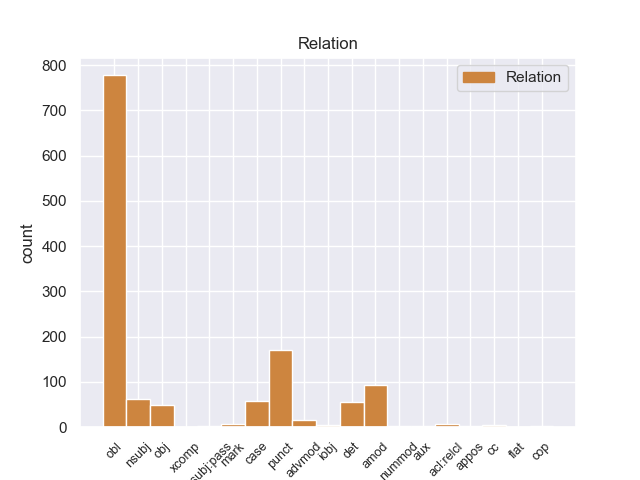
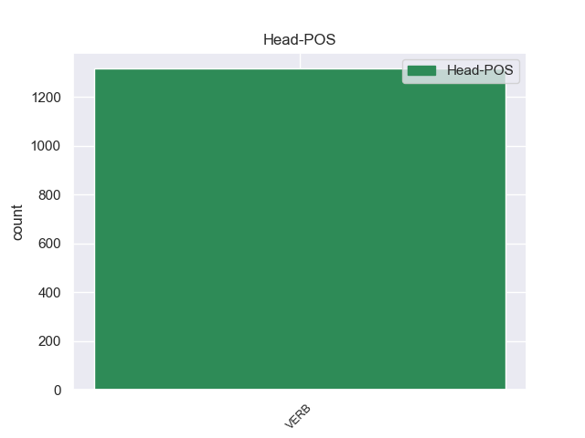
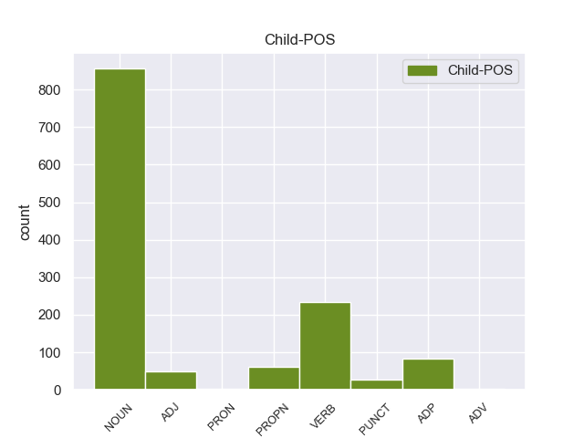

Distribution of features within this leaf



Agreement Rules sorted by frequency.
- When the dependent token is the oblique nominal(obl) of the head token, and the head token is VERB and the dependent token is NOUN.
1 Una _ _ _ _ 0 _ _ _
2 vez _ _ _ _ 0 _ _ _
3 que _ _ _ _ 0 _ _ _
4 el _ _ _ _ 0 _ _ _
5 Hijo hijo NOUN _ Gender=Masc|Number=Sing 14 obl _ _
6 de _ _ _ _ 0 _ _ _
7 Krypton _ _ _ _ 0 _ _ _
8 suelta _ _ _ _ 0 _ _ _
9 el _ _ _ _ 0 _ _ _
10 misil _ _ _ _ 0 _ _ _
11 , _ _ _ _ 0 _ _ _
12 este _ _ _ _ 0 _ _ _
13 intenta _ _ _ _ 0 _ _ _
14 huir huir VERB _ Gender=Masc|Number=Sing 0 _ _ _
15 de _ _ _ _ 0 _ _ _
16 el _ _ _ _ 0 _ _ _
17 lugar _ _ _ _ 0 _ _ _
18 pero _ _ _ _ 0 _ _ _
19 es _ _ _ _ 0 _ _ _
20 atrapado _ _ _ _ 0 _ _ _
21 en _ _ _ _ 0 _ _ _
22 la _ _ _ _ 0 _ _ _
23 explosión _ _ _ _ 0 _ _ _
24 . _ _ _ _ 0 _ _ _
1 En _ _ _ _ 0 _ _ _
2 este _ _ _ _ 0 _ _ _
3 poemario _ _ _ _ 0 _ _ _
4 místico _ _ _ _ 0 _ _ _
5 y _ _ _ _ 0 _ _ _
6 nocturno _ _ _ _ 0 _ _ _
7 se _ _ _ _ 0 _ _ _
8 canta canta VERB _ Gender=Masc|Number=Sing 14 obl _ _
9 a _ _ _ _ 0 _ _ _
10 la _ _ _ _ 0 _ _ _
11 muerte _ _ _ _ 0 _ _ _
12 y _ _ _ _ 0 _ _ _
13 se _ _ _ _ 0 _ _ _
14 identifica identifica VERB _ Gender=Masc|Number=Sing 0 _ _ _
15 a _ _ _ _ 0 _ _ _
16 la _ _ _ _ 0 _ _ _
17 amada _ _ _ _ 0 _ _ _
18 con _ _ _ _ 0 _ _ _
19 los _ _ _ _ 0 _ _ _
20 misterios _ _ _ _ 0 _ _ _
21 de _ _ _ _ 0 _ _ _
22 el _ _ _ _ 0 _ _ _
23 cristianismo _ _ _ _ 0 _ _ _
24 , _ _ _ _ 0 _ _ _
25 y _ _ _ _ 0 _ _ _
26 el _ _ _ _ 0 _ _ _
27 misticismo _ _ _ _ 0 _ _ _
28 de _ _ _ _ 0 _ _ _
29 el _ _ _ _ 0 _ _ _
30 viaje _ _ _ _ 0 _ _ _
31 de _ _ _ _ 0 _ _ _
32 la _ _ _ _ 0 _ _ _
33 prometida _ _ _ _ 0 _ _ _
34 muerta _ _ _ _ 0 _ _ _
35 por _ _ _ _ 0 _ _ _
36 las _ _ _ _ 0 _ _ _
37 regiones _ _ _ _ 0 _ _ _
38 de _ _ _ _ 0 _ _ _
39 la _ _ _ _ 0 _ _ _
40 oscuridad _ _ _ _ 0 _ _ _
41 se _ _ _ _ 0 _ _ _
42 hace _ _ _ _ 0 _ _ _
43 patente _ _ _ _ 0 _ _ _
44 a _ _ _ _ 0 _ _ _
45 el _ _ _ _ 0 _ _ _
46 fundir _ _ _ _ 0 _ _ _
47 la _ _ _ _ 0 _ _ _
48 persona _ _ _ _ 0 _ _ _
49 de _ _ _ _ 0 _ _ _
50 la _ _ _ _ 0 _ _ _
51 amada _ _ _ _ 0 _ _ _
52 con _ _ _ _ 0 _ _ _
53 las _ _ _ _ 0 _ _ _
54 personas _ _ _ _ 0 _ _ _
55 de _ _ _ _ 0 _ _ _
56 la _ _ _ _ 0 _ _ _
57 Trinidad _ _ _ _ 0 _ _ _
58 cristiana _ _ _ _ 0 _ _ _
59 . _ _ _ _ 0 _ _ _
1 En _ _ _ _ 0 _ _ _
2 1991 _ _ _ _ 0 _ _ _
3 , _ _ _ _ 0 _ _ _
4 como _ _ _ _ 0 _ _ _
5 ya _ _ _ _ 0 _ _ _
6 está _ _ _ _ 0 _ _ _
7 indicado indicado VERB _ Gender=Masc|Number=Sing 0 _ _ _
8 en _ _ _ _ 0 _ _ _
9 el _ _ _ _ 0 _ _ _
10 párrafo _ _ _ _ 0 _ _ _
11 anterior _ _ _ _ 0 _ _ _
12 , _ _ _ _ 0 _ _ _
13 se _ _ _ _ 0 _ _ _
14 creó _ _ _ _ 0 _ _ _
15 un _ _ _ _ 0 _ _ _
16 equipo _ _ _ _ 0 _ _ _
17 ad _ _ _ _ 0 _ _ _
18 hoc hoc NOUN _ Gender=Masc|Number=Sing 7 punct _ _
19 para _ _ _ _ 0 _ _ _
20 averiguar _ _ _ _ 0 _ _ _
21 como _ _ _ _ 0 _ _ _
22 se _ _ _ _ 0 _ _ _
23 podía _ _ _ _ 0 _ _ _
24 desarrollar _ _ _ _ 0 _ _ _
25 el _ _ _ _ 0 _ _ _
26 Dialogo _ _ _ _ 0 _ _ _
27 Social _ _ _ _ 0 _ _ _
28 , _ _ _ _ 0 _ _ _
29 este _ _ _ _ 0 _ _ _
30 equipo _ _ _ _ 0 _ _ _
31 estaba _ _ _ _ 0 _ _ _
32 formado _ _ _ _ 0 _ _ _
33 por _ _ _ _ 0 _ _ _
34 representantes _ _ _ _ 0 _ _ _
35 de _ _ _ _ 0 _ _ _
36 todas _ _ _ _ 0 _ _ _
37 las _ _ _ _ 0 _ _ _
38 organizaciones _ _ _ _ 0 _ _ _
39 relacionadas _ _ _ _ 0 _ _ _
40 con _ _ _ _ 0 _ _ _
41 CES _ _ _ _ 0 _ _ _
42 , _ _ _ _ 0 _ _ _
43 UNICE _ _ _ _ 0 _ _ _
44 y _ _ _ _ 0 _ _ _
45 CEEP _ _ _ _ 0 _ _ _
46 ; _ _ _ _ 0 _ _ _
1 Para _ _ _ _ 0 _ _ _
2 ello _ _ _ _ 0 _ _ _
3 , _ _ _ _ 0 _ _ _
4 Finnair _ _ _ _ 0 _ _ _
5 ha _ _ _ _ 0 _ _ _
6 contratado _ _ _ _ 0 _ _ _
7 a _ _ _ _ 0 _ _ _
8 4 _ _ _ _ 0 _ _ _
9 personas _ _ _ _ 0 _ _ _
10 que _ _ _ _ 0 _ _ _
11 , _ _ _ _ 0 _ _ _
12 como _ _ _ _ 0 _ _ _
13 Quality _ _ _ _ 0 _ _ _
14 Hunters _ _ _ _ 0 _ _ _
15 de _ _ _ _ 0 _ _ _
16 la _ _ _ _ 0 _ _ _
17 compañía _ _ _ _ 0 _ _ _
18 aérea _ _ _ _ 0 _ _ _
19 , _ _ _ _ 0 _ _ _
20 vuelan _ _ _ _ 0 _ _ _
21 durante _ _ _ _ 0 _ _ _
22 este _ _ _ _ 0 _ _ _
23 mes _ _ _ _ 0 _ _ _
24 y _ _ _ _ 0 _ _ _
25 el _ _ _ _ 0 _ _ _
26 próximo _ _ _ _ 0 _ _ _
27 a _ _ _ _ 0 _ _ _
28 diferentes _ _ _ _ 0 _ _ _
29 destinos _ _ _ _ 0 _ _ _
30 de _ _ _ _ 0 _ _ _
31 Finnair _ _ _ _ 0 _ _ _
32 para _ _ _ _ 0 _ _ _
33 analizar analizar VERB _ Gender=Masc|Number=Sing 0 _ _ _
34 todos _ _ _ _ 0 _ _ _
35 los _ _ _ _ 0 _ _ _
36 detalles _ _ _ _ 0 _ _ _
37 de _ _ _ _ 0 _ _ _
38 los _ _ _ _ 0 _ _ _
39 vuelos _ _ _ _ 0 _ _ _
40 y _ _ _ _ 0 _ _ _
41 los _ _ _ _ 0 _ _ _
42 destinos _ _ _ _ 0 _ _ _
43 y _ _ _ _ 0 _ _ _
44 compartir _ _ _ _ 0 _ _ _
45 sus _ _ _ _ 0 _ _ _
46 experiencias _ _ _ _ 0 _ _ _
47 en _ _ _ _ 0 _ _ _
48 un _ _ _ _ 0 _ _ _
49 blog blog NOUN _ Gender=Masc|Number=Sing 33 amod _ _
50 . _ _ _ _ 0 _ _ _
1 La _ _ _ _ 0 _ _ _
2 victoria victoria NOUN _ Gender=Masc|Number=Sing 7 nsubj _ _
3 costarricense _ _ _ _ 0 _ _ _
4 en _ _ _ _ 0 _ _ _
5 Santa _ _ _ _ 0 _ _ _
6 Rosa _ _ _ _ 0 _ _ _
7 permitió permitió VERB _ Gender=Masc|Number=Sing 0 _ _ _
8 la _ _ _ _ 0 _ _ _
9 expulsión _ _ _ _ 0 _ _ _
10 de _ _ _ _ 0 _ _ _
11 los _ _ _ _ 0 _ _ _
12 filibusteros _ _ _ _ 0 _ _ _
13 de _ _ _ _ 0 _ _ _
14 suelo _ _ _ _ 0 _ _ _
15 costarricense _ _ _ _ 0 _ _ _
16 , _ _ _ _ 0 _ _ _
17 trasladando _ _ _ _ 0 _ _ _
18 el _ _ _ _ 0 _ _ _
19 escenario _ _ _ _ 0 _ _ _
20 de _ _ _ _ 0 _ _ _
21 la _ _ _ _ 0 _ _ _
22 guerra _ _ _ _ 0 _ _ _
23 a _ _ _ _ 0 _ _ _
24 la _ _ _ _ 0 _ _ _
25 vecina _ _ _ _ 0 _ _ _
26 Nicaragua _ _ _ _ 0 _ _ _
27 , _ _ _ _ 0 _ _ _
28 en _ _ _ _ 0 _ _ _
29 el _ _ _ _ 0 _ _ _
30 marco _ _ _ _ 0 _ _ _
31 de _ _ _ _ 0 _ _ _
32 la _ _ _ _ 0 _ _ _
33 Guerra _ _ _ _ 0 _ _ _
34 Nacional _ _ _ _ 0 _ _ _
35 de _ _ _ _ 0 _ _ _
36 Nicaragua _ _ _ _ 0 _ _ _
37 , _ _ _ _ 0 _ _ _
38 a _ _ _ _ 0 _ _ _
39 la _ _ _ _ 0 _ _ _
40 vez _ _ _ _ 0 _ _ _
41 que _ _ _ _ 0 _ _ _
42 llena _ _ _ _ 0 _ _ _
43 de _ _ _ _ 0 _ _ _
44 optimismo _ _ _ _ 0 _ _ _
45 a _ _ _ _ 0 _ _ _
46 el _ _ _ _ 0 _ _ _
47 ejército _ _ _ _ 0 _ _ _
48 expedicionario _ _ _ _ 0 _ _ _
49 costarricense _ _ _ _ 0 _ _ _
50 . _ _ _ _ 0 _ _ _
1 El _ _ _ _ 0 _ _ _
2 Audi audi VERB _ Gender=Masc|Number=Sing 0 _ _ _
3 A3 _ _ _ _ 0 _ _ _
4 es _ _ _ _ 0 _ _ _
5 un _ _ _ _ 0 _ _ _
6 automóvil _ _ _ _ 0 _ _ _
7 de _ _ _ _ 0 _ _ _
8 el _ _ _ _ 0 _ _ _
9 segmento segmento NOUN _ Gender=Masc|Number=Sing 2 det _ _
10 C _ _ _ _ 0 _ _ _
11 producido _ _ _ _ 0 _ _ _
12 por _ _ _ _ 0 _ _ _
13 el _ _ _ _ 0 _ _ _
14 fabricante _ _ _ _ 0 _ _ _
15 alemán _ _ _ _ 0 _ _ _
16 Audi _ _ _ _ 0 _ _ _
17 desde _ _ _ _ 0 _ _ _
18 1996 _ _ _ _ 0 _ _ _
19 . _ _ _ _ 0 _ _ _
1 Es _ _ _ _ 0 _ _ _
2 endémica _ _ _ _ 0 _ _ _
3 de _ _ _ _ 0 _ _ _
4 Indonesia _ _ _ _ 0 _ _ _
5 , _ _ _ _ 0 _ _ _
6 sólo _ _ _ _ 0 _ _ _
7 se _ _ _ _ 0 _ _ _
8 conoce conoce VERB _ Gender=Masc|Number=Sing 0 _ _ _
9 en _ _ _ _ 0 _ _ _
10 el _ _ _ _ 0 _ _ _
11 norte norte ADP _ Gender=Masc|Number=Sing 8 obl _ _
12 de _ _ _ _ 0 _ _ _
13 Sumatra _ _ _ _ 0 _ _ _
14 . _ _ _ _ 0 _ _ _
1 En _ _ _ _ 0 _ _ _
2 1697 _ _ _ _ 0 _ _ _
3 Eugenio _ _ _ _ 0 _ _ _
4 avanzó avanzó VERB _ Gender=Masc|Number=Sing 7 punct _ _
5 rápidamente _ _ _ _ 0 _ _ _
6 y _ _ _ _ 0 _ _ _
7 atacó atacó VERB _ Gender=Masc|Number=Sing 0 _ _ _
8 a _ _ _ _ 0 _ _ _
9 Mustafá _ _ _ _ 0 _ _ _
10 II _ _ _ _ 0 _ _ _
11 , _ _ _ _ 0 _ _ _
12 logrando _ _ _ _ 0 _ _ _
13 la _ _ _ _ 0 _ _ _
14 victoria _ _ _ _ 0 _ _ _
15 en _ _ _ _ 0 _ _ _
16 la _ _ _ _ 0 _ _ _
17 batalla _ _ _ _ 0 _ _ _
18 de _ _ _ _ 0 _ _ _
19 Zenta _ _ _ _ 0 _ _ _
20 , _ _ _ _ 0 _ _ _
21 en _ _ _ _ 0 _ _ _
22 la _ _ _ _ 0 _ _ _
23 que _ _ _ _ 0 _ _ _
24 los _ _ _ _ 0 _ _ _
25 otomanos _ _ _ _ 0 _ _ _
26 perdieron _ _ _ _ 0 _ _ _
27 30.000 _ _ _ _ 0 _ _ _
28 hombres _ _ _ _ 0 _ _ _
29 . _ _ _ _ 0 _ _ _
1 La _ _ _ _ 0 _ _ _
2 canción canción PROPN _ Gender=Masc|Number=Sing 5 obl _ _
3 posee _ _ _ _ 0 _ _ _
4 la _ _ _ _ 0 _ _ _
5 colaboración colaboración VERB _ Gender=Masc|Number=Sing 0 _ _ _
6 de _ _ _ _ 0 _ _ _
7 la _ _ _ _ 0 _ _ _
8 cantante _ _ _ _ 0 _ _ _
9 de _ _ _ _ 0 _ _ _
10 R _ _ _ _ 0 _ _ _
11 & _ _ _ _ 0 _ _ _
12 B _ _ _ _ 0 _ _ _
13 estadounidense _ _ _ _ 0 _ _ _
14 Alicia _ _ _ _ 0 _ _ _
15 Keys _ _ _ _ 0 _ _ _
16 . _ _ _ _ 0 _ _ _
1 La _ _ _ _ 0 _ _ _
2 idea _ _ _ _ 0 _ _ _
3 inicial _ _ _ _ 0 _ _ _
4 de _ _ _ _ 0 _ _ _
5 este _ _ _ _ 0 _ _ _
6 tercer _ _ _ _ 0 _ _ _
7 libro _ _ _ _ 0 _ _ _
8 era _ _ _ _ 0 _ _ _
9 hacer _ _ _ _ 0 _ _ _
10 una _ _ _ _ 0 _ _ _
11 obra obra NOUN _ Gender=Masc|Number=Sing 43 case _ _
12 " _ _ _ _ 0 _ _ _
13 para _ _ _ _ 0 _ _ _
14 compartir _ _ _ _ 0 _ _ _
15 con _ _ _ _ 0 _ _ _
16 los _ _ _ _ 0 _ _ _
17 colegas _ _ _ _ 0 _ _ _
18 de _ _ _ _ 0 _ _ _
19 profesión _ _ _ _ 0 _ _ _
20 " _ _ _ _ 0 _ _ _
21 , _ _ _ _ 0 _ _ _
22 y _ _ _ _ 0 _ _ _
23 de _ _ _ _ 0 _ _ _
24 ahí _ _ _ _ 0 _ _ _
25 que _ _ _ _ 0 _ _ _
26 en _ _ _ _ 0 _ _ _
27 las _ _ _ _ 0 _ _ _
28 cantidades _ _ _ _ 0 _ _ _
29 de _ _ _ _ 0 _ _ _
30 los _ _ _ _ 0 _ _ _
31 ingredientes _ _ _ _ 0 _ _ _
32 se _ _ _ _ 0 _ _ _
33 incluya _ _ _ _ 0 _ _ _
34 la _ _ _ _ 0 _ _ _
35 versión _ _ _ _ 0 _ _ _
36 para _ _ _ _ 0 _ _ _
37 75 _ _ _ _ 0 _ _ _
38 comensales _ _ _ _ 0 _ _ _
39 , _ _ _ _ 0 _ _ _
40 pero _ _ _ _ 0 _ _ _
41 luego _ _ _ _ 0 _ _ _
42 se _ _ _ _ 0 _ _ _
43 cambió cambió VERB _ Gender=Masc|Number=Sing 0 _ _ _
44 a _ _ _ _ 0 _ _ _
45 la _ _ _ _ 0 _ _ _
46 dimensión _ _ _ _ 0 _ _ _
47 familiar _ _ _ _ 0 _ _ _
48 ( _ _ _ _ 0 _ _ _
49 2 _ _ _ _ 0 _ _ _
50 y _ _ _ _ 0 _ _ _
51 6 _ _ _ _ 0 _ _ _
52 personas _ _ _ _ 0 _ _ _
53 ) _ _ _ _ 0 _ _ _
54 . _ _ _ _ 0 _ _ _
1 Israel _ _ _ _ 0 _ _ _
2 extiende extiende VERB _ Gender=Masc|Number=Sing 0 _ _ _
3 sus _ _ _ _ 0 _ _ _
4 dominios dominios NOUN _ Gender=Masc|Number=Sing 2 obj _ _
5 en _ _ _ _ 0 _ _ _
6 el _ _ _ _ 0 _ _ _
7 Levante _ _ _ _ 0 _ _ _
8 derrotando _ _ _ _ 0 _ _ _
9 a _ _ _ _ 0 _ _ _
10 amonitas _ _ _ _ 0 _ _ _
11 y _ _ _ _ 0 _ _ _
12 arameos _ _ _ _ 0 _ _ _
13 , _ _ _ _ 0 _ _ _
14 llegando _ _ _ _ 0 _ _ _
15 hasta _ _ _ _ 0 _ _ _
16 Damasco _ _ _ _ 0 _ _ _
17 . _ _ _ _ 0 _ _ _
1 En _ _ _ _ 0 _ _ _
2 2005 _ _ _ _ 0 _ _ _
3 , _ _ _ _ 0 _ _ _
4 Gordon _ _ _ _ 0 _ _ _
5 compitió compitió VERB _ Gender=Masc|Number=Sing 0 _ _ _
6 de _ _ _ _ 0 _ _ _
7 nuevo _ _ _ _ 0 _ _ _
8 en _ _ _ _ 0 _ _ _
9 la _ _ _ _ 0 _ _ _
10 Carrera _ _ _ _ 0 _ _ _
11 de _ _ _ _ 0 _ _ _
12 Campeones _ _ _ _ 0 _ _ _
13 , _ _ _ _ 0 _ _ _
14 esta _ _ _ _ 0 _ _ _
15 vez _ _ _ _ 0 _ _ _
16 celebrada _ _ _ _ 0 _ _ _
17 en _ _ _ _ 0 _ _ _
18 París _ _ _ _ 0 _ _ _
19 , _ _ _ _ 0 _ _ _
20 Francia _ _ _ _ 0 _ _ _
21 , _ _ _ _ 0 _ _ _
22 donde _ _ _ _ 0 _ _ _
23 se _ _ _ _ 0 _ _ _
24 asoció _ _ _ _ 0 _ _ _
25 con _ _ _ _ 0 _ _ _
26 el _ _ _ _ 0 _ _ _
27 famoso _ _ _ _ 0 _ _ _
28 piloto _ _ _ _ 0 _ _ _
29 de _ _ _ _ 0 _ _ _
30 motocross _ _ _ _ 0 _ _ _
31 y _ _ _ _ 0 _ _ _
32 ganador _ _ _ _ 0 _ _ _
33 de _ _ _ _ 0 _ _ _
34 ese _ _ _ _ 0 _ _ _
35 año _ _ _ _ 0 _ _ _
36 de _ _ _ _ 0 _ _ _
37 los _ _ _ _ 0 _ _ _
38 X _ _ _ _ 0 _ _ _
39 Games _ _ _ _ 0 _ _ _
40 , _ _ _ _ 0 _ _ _
41 Travis _ _ _ _ 0 _ _ _
42 Pastrana _ _ _ _ 0 _ _ _
43 . . PUNCT _ Gender=Masc|Number=Sing 5 punct _ _
1 A _ _ _ _ 0 _ _ _
2 partir _ _ _ _ 0 _ _ _
3 de _ _ _ _ 0 _ _ _
4 1731 _ _ _ _ 0 _ _ _
5 la _ _ _ _ 0 _ _ _
6 provincia _ _ _ _ 0 _ _ _
7 se _ _ _ _ 0 _ _ _
8 divide divide VERB _ Gender=Masc|Number=Sing 0 _ _ _
9 en _ _ _ _ 0 _ _ _
10 2 _ _ _ _ 0 _ _ _
11 : _ _ _ _ 0 _ _ _
12 Guayana _ _ _ _ 0 _ _ _
13 se _ _ _ _ 0 _ _ _
14 integró _ _ _ _ 0 _ _ _
15 a _ _ _ _ 0 _ _ _
16 la _ _ _ _ 0 _ _ _
17 provincia _ _ _ _ 0 _ _ _
18 de _ _ _ _ 0 _ _ _
19 Nueva _ _ _ _ 0 _ _ _
20 Andalucía _ _ _ _ 0 _ _ _
21 , _ _ _ _ 0 _ _ _
22 bajo _ _ _ _ 0 _ _ _
23 la _ _ _ _ 0 _ _ _
24 jurisdicción _ _ _ _ 0 _ _ _
25 de _ _ _ _ 0 _ _ _
26 la _ _ _ _ 0 _ _ _
27 Real _ _ _ _ 0 _ _ _
28 Audiencia _ _ _ _ 0 _ _ _
29 de _ _ _ _ 0 _ _ _
30 Santo _ _ _ _ 0 _ _ _
31 Domingo _ _ _ _ 0 _ _ _
32 y _ _ _ _ 0 _ _ _
33 Trinidad _ _ _ _ 0 _ _ _
34 que _ _ _ _ 0 _ _ _
35 continuaba _ _ _ _ 0 _ _ _
36 bajo _ _ _ _ 0 _ _ _
37 la _ _ _ _ 0 _ _ _
38 jurisdicción _ _ _ _ 0 _ _ _
39 de _ _ _ _ 0 _ _ _
40 la _ _ _ _ 0 _ _ _
41 Real _ _ _ _ 0 _ _ _
42 Audiencia audiencia VERB _ Gender=Masc|Number=Sing 8 amod _ _
43 de _ _ _ _ 0 _ _ _
44 Santafé _ _ _ _ 0 _ _ _
45 . _ _ _ _ 0 _ _ _
1 En _ _ _ _ 0 _ _ _
2 este _ _ _ _ 0 _ _ _
3 poemario _ _ _ _ 0 _ _ _
4 místico _ _ _ _ 0 _ _ _
5 y _ _ _ _ 0 _ _ _
6 nocturno _ _ _ _ 0 _ _ _
7 se _ _ _ _ 0 _ _ _
8 canta canta VERB _ Gender=Masc|Number=Sing 0 _ _ _
9 a _ _ _ _ 0 _ _ _
10 la _ _ _ _ 0 _ _ _
11 muerte _ _ _ _ 0 _ _ _
12 y _ _ _ _ 0 _ _ _
13 se _ _ _ _ 0 _ _ _
14 identifica _ _ _ _ 0 _ _ _
15 a _ _ _ _ 0 _ _ _
16 la _ _ _ _ 0 _ _ _
17 amada _ _ _ _ 0 _ _ _
18 con _ _ _ _ 0 _ _ _
19 los _ _ _ _ 0 _ _ _
20 misterios _ _ _ _ 0 _ _ _
21 de _ _ _ _ 0 _ _ _
22 el _ _ _ _ 0 _ _ _
23 cristianismo _ _ _ _ 0 _ _ _
24 , _ _ _ _ 0 _ _ _
25 y _ _ _ _ 0 _ _ _
26 el _ _ _ _ 0 _ _ _
27 misticismo _ _ _ _ 0 _ _ _
28 de _ _ _ _ 0 _ _ _
29 el _ _ _ _ 0 _ _ _
30 viaje _ _ _ _ 0 _ _ _
31 de _ _ _ _ 0 _ _ _
32 la _ _ _ _ 0 _ _ _
33 prometida _ _ _ _ 0 _ _ _
34 muerta _ _ _ _ 0 _ _ _
35 por _ _ _ _ 0 _ _ _
36 las _ _ _ _ 0 _ _ _
37 regiones _ _ _ _ 0 _ _ _
38 de _ _ _ _ 0 _ _ _
39 la _ _ _ _ 0 _ _ _
40 oscuridad _ _ _ _ 0 _ _ _
41 se _ _ _ _ 0 _ _ _
42 hace _ _ _ _ 0 _ _ _
43 patente _ _ _ _ 0 _ _ _
44 a _ _ _ _ 0 _ _ _
45 el _ _ _ _ 0 _ _ _
46 fundir fundir ADJ _ Gender=Masc|Number=Sing 8 obl _ _
47 la _ _ _ _ 0 _ _ _
48 persona _ _ _ _ 0 _ _ _
49 de _ _ _ _ 0 _ _ _
50 la _ _ _ _ 0 _ _ _
51 amada _ _ _ _ 0 _ _ _
52 con _ _ _ _ 0 _ _ _
53 las _ _ _ _ 0 _ _ _
54 personas _ _ _ _ 0 _ _ _
55 de _ _ _ _ 0 _ _ _
56 la _ _ _ _ 0 _ _ _
57 Trinidad _ _ _ _ 0 _ _ _
58 cristiana _ _ _ _ 0 _ _ _
59 . _ _ _ _ 0 _ _ _
1 El _ _ _ _ 0 _ _ _
2 FC _ _ _ _ 0 _ _ _
3 Barcelona _ _ _ _ 0 _ _ _
4 a _ _ _ _ 0 _ _ _
5 el _ _ _ _ 0 _ _ _
6 final _ _ _ _ 0 _ _ _
7 tendrá _ _ _ _ 0 _ _ _
8 que _ _ _ _ 0 _ _ _
9 abonar _ _ _ _ 0 _ _ _
10 casi _ _ _ _ 0 _ _ _
11 40 _ _ _ _ 0 _ _ _
12 millones _ _ _ _ 0 _ _ _
13 de _ _ _ _ 0 _ _ _
14 euros _ _ _ _ 0 _ _ _
15 por _ _ _ _ 0 _ _ _
16 el _ _ _ _ 0 _ _ _
17 fichaje _ _ _ _ 0 _ _ _
18 de _ _ _ _ 0 _ _ _
19 Alexis _ _ _ _ 0 _ _ _
20 Sánchez _ _ _ _ 0 _ _ _
21 que _ _ _ _ 0 _ _ _
22 ya _ _ _ _ 0 _ _ _
23 es _ _ _ _ 0 _ _ _
24 oficial _ _ _ _ 0 _ _ _
25 y _ _ _ _ 0 _ _ _
26 que _ _ _ _ 0 _ _ _
27 se _ _ _ _ 0 _ _ _
28 hizo hizo VERB _ Gender=Masc|Number=Sing 0 _ _ _
29 anoche anoche VERB _ Gender=Masc|Number=Sing 28 obj _ _
30 con _ _ _ _ 0 _ _ _
31 el _ _ _ _ 0 _ _ _
32 hijo _ _ _ _ 0 _ _ _
33 de _ _ _ _ 0 _ _ _
34 el _ _ _ _ 0 _ _ _
35 Presidente _ _ _ _ 0 _ _ _
36 de _ _ _ _ 0 _ _ _
37 el _ _ _ _ 0 _ _ _
38 Udinese _ _ _ _ 0 _ _ _
39 . _ _ _ _ 0 _ _ _
1 La _ _ _ _ 0 _ _ _
2 nota nota VERB _ Gender=Masc|Number=Sing 0 _ _ _
3 más más VERB _ Gender=Masc|Number=Sing 2 case _ _
4 alta _ _ _ _ 0 _ _ _
5 se _ _ _ _ 0 _ _ _
6 la _ _ _ _ 0 _ _ _
7 da _ _ _ _ 0 _ _ _
8 Alternative _ _ _ _ 0 _ _ _
9 press _ _ _ _ 0 _ _ _
10 con _ _ _ _ 0 _ _ _
11 un _ _ _ _ 0 _ _ _
12 5 _ _ _ _ 0 _ _ _
13 / _ _ _ _ 0 _ _ _
14 5 _ _ _ _ 0 _ _ _
15 mientras _ _ _ _ 0 _ _ _
16 que _ _ _ _ 0 _ _ _
17 la _ _ _ _ 0 _ _ _
18 nota _ _ _ _ 0 _ _ _
19 más _ _ _ _ 0 _ _ _
20 baja _ _ _ _ 0 _ _ _
21 se _ _ _ _ 0 _ _ _
22 la _ _ _ _ 0 _ _ _
23 da _ _ _ _ 0 _ _ _
24 la _ _ _ _ 0 _ _ _
25 revista _ _ _ _ 0 _ _ _
26 Rolling _ _ _ _ 0 _ _ _
27 stone _ _ _ _ 0 _ _ _
28 con _ _ _ _ 0 _ _ _
29 un _ _ _ _ 0 _ _ _
30 3 _ _ _ _ 0 _ _ _
31 / _ _ _ _ 0 _ _ _
32 5 _ _ _ _ 0 _ _ _
33 , _ _ _ _ 0 _ _ _
34 aun _ _ _ _ 0 _ _ _
35 así _ _ _ _ 0 _ _ _
36 todas _ _ _ _ 0 _ _ _
37 las _ _ _ _ 0 _ _ _
38 críticas _ _ _ _ 0 _ _ _
39 sobrepasan _ _ _ _ 0 _ _ _
40 el _ _ _ _ 0 _ _ _
41 aprobado _ _ _ _ 0 _ _ _
42 . _ _ _ _ 0 _ _ _
1 Se _ _ _ _ 0 _ _ _
2 ha _ _ _ _ 0 _ _ _
3 relacionado relacionado VERB _ Gender=Masc|Number=Sing 0 _ _ _
4 esta _ _ _ _ 0 _ _ _
5 escritura escritura VERB _ Gender=Masc|Number=Sing 3 nsubj _ _
6 con _ _ _ _ 0 _ _ _
7 la _ _ _ _ 0 _ _ _
8 escritura _ _ _ _ 0 _ _ _
9 de _ _ _ _ 0 _ _ _
10 las _ _ _ _ 0 _ _ _
11 runas _ _ _ _ 0 _ _ _
12 germánicas _ _ _ _ 0 _ _ _
13 , _ _ _ _ 0 _ _ _
14 no _ _ _ _ 0 _ _ _
15 sólo _ _ _ _ 0 _ _ _
16 por _ _ _ _ 0 _ _ _
17 la _ _ _ _ 0 _ _ _
18 coincidencia _ _ _ _ 0 _ _ _
19 geográfica _ _ _ _ 0 _ _ _
20 sino _ _ _ _ 0 _ _ _
21 también _ _ _ _ 0 _ _ _
22 por _ _ _ _ 0 _ _ _
23 el _ _ _ _ 0 _ _ _
24 carácter _ _ _ _ 0 _ _ _
25 agrícola _ _ _ _ 0 _ _ _
26 / _ _ _ _ 0 _ _ _
27 lunar _ _ _ _ 0 _ _ _
28 que _ _ _ _ 0 _ _ _
29 tienen _ _ _ _ 0 _ _ _
30 . _ _ _ _ 0 _ _ _
1 La _ _ _ _ 0 _ _ _
2 Cabeza _ _ _ _ 0 _ _ _
3 Mediana _ _ _ _ 0 _ _ _
4 se _ _ _ _ 0 _ _ _
5 halla _ _ _ _ 0 _ _ _
6 a _ _ _ _ 0 _ _ _
7 el _ _ _ _ 0 _ _ _
8 norte _ _ _ _ 0 _ _ _
9 de _ _ _ _ 0 _ _ _
10 el _ _ _ _ 0 _ _ _
11 arroyo _ _ _ _ 0 _ _ _
12 de _ _ _ _ 0 _ _ _
13 Angostura _ _ _ _ 0 _ _ _
14 , _ _ _ _ 0 _ _ _
15 una _ _ _ _ 0 _ _ _
16 de _ _ _ _ 0 _ _ _
17 las _ _ _ _ 0 _ _ _
18 corrientes _ _ _ _ 0 _ _ _
19 fluviales _ _ _ _ 0 _ _ _
20 que _ _ _ _ 0 _ _ _
21 forman _ _ _ _ 0 _ _ _
22 el _ _ _ _ 0 _ _ _
23 río _ _ _ _ 0 _ _ _
24 Lozoya _ _ _ _ 0 _ _ _
25 , _ _ _ _ 0 _ _ _
26 y _ _ _ _ 0 _ _ _
27 a _ _ _ _ 0 _ _ _
28 el _ _ _ _ 0 _ _ _
29 sur _ _ _ _ 0 _ _ _
30 de _ _ _ _ 0 _ _ _
31 el _ _ _ _ 0 _ _ _
32 Monasterio _ _ _ _ 0 _ _ _
33 de _ _ _ _ 0 _ _ _
34 El _ _ _ _ 0 _ _ _
35 Paular _ _ _ _ 0 _ _ _
36 , _ _ _ _ 0 _ _ _
37 de _ _ _ _ 0 _ _ _
38 el _ _ _ _ 0 _ _ _
39 que _ _ _ _ 0 _ _ _
40 le _ _ _ _ 0 _ _ _
41 separan separan VERB _ Gender=Masc|Number=Sing 0 _ _ _
42 unos _ _ _ _ 0 _ _ _
43 cinco _ _ _ _ 0 _ _ _
44 kilómetros kilómetros ADP _ Gender=Masc|Number=Sing 41 amod _ _
45 . _ _ _ _ 0 _ _ _
1 Nacido nacido ADP _ Gender=Masc|Number=Sing 44 punct _ _
2 en _ _ _ _ 0 _ _ _
3 Costa _ _ _ _ 0 _ _ _
4 a _ _ _ _ 0 _ _ _
5 el _ _ _ _ 0 _ _ _
6 Pino _ _ _ _ 0 _ _ _
7 , _ _ _ _ 0 _ _ _
8 pequeña _ _ _ _ 0 _ _ _
9 localidad _ _ _ _ 0 _ _ _
10 cercana _ _ _ _ 0 _ _ _
11 a _ _ _ _ 0 _ _ _
12 Siena _ _ _ _ 0 _ _ _
13 de _ _ _ _ 0 _ _ _
14 la _ _ _ _ 0 _ _ _
15 que _ _ _ _ 0 _ _ _
16 tomó _ _ _ _ 0 _ _ _
17 su _ _ _ _ 0 _ _ _
18 nombre _ _ _ _ 0 _ _ _
19 , _ _ _ _ 0 _ _ _
20 fue _ _ _ _ 0 _ _ _
21 discípulo _ _ _ _ 0 _ _ _
22 de _ _ _ _ 0 _ _ _
23 Domenico _ _ _ _ 0 _ _ _
24 Beccafumi _ _ _ _ 0 _ _ _
25 entre _ _ _ _ 0 _ _ _
26 1537 _ _ _ _ 0 _ _ _
27 y _ _ _ _ 0 _ _ _
28 1542 _ _ _ _ 0 _ _ _
29 , _ _ _ _ 0 _ _ _
30 pero _ _ _ _ 0 _ _ _
31 su _ _ _ _ 0 _ _ _
32 introducción _ _ _ _ 0 _ _ _
33 a _ _ _ _ 0 _ _ _
34 la _ _ _ _ 0 _ _ _
35 Maniera _ _ _ _ 0 _ _ _
36 tuvo _ _ _ _ 0 _ _ _
37 lugar _ _ _ _ 0 _ _ _
38 en _ _ _ _ 0 _ _ _
39 Roma _ _ _ _ 0 _ _ _
40 , _ _ _ _ 0 _ _ _
41 a _ _ _ _ 0 _ _ _
42 donde _ _ _ _ 0 _ _ _
43 se _ _ _ _ 0 _ _ _
44 trasladó trasladó VERB _ Gender=Masc|Number=Sing 0 _ _ _
45 en _ _ _ _ 0 _ _ _
46 1543 _ _ _ _ 0 _ _ _
47 , _ _ _ _ 0 _ _ _
48 a _ _ _ _ 0 _ _ _
49 el _ _ _ _ 0 _ _ _
50 lado _ _ _ _ 0 _ _ _
51 de _ _ _ _ 0 _ _ _
52 Perino _ _ _ _ 0 _ _ _
53 de _ _ _ _ 0 _ _ _
54 el _ _ _ _ 0 _ _ _
55 Vaga _ _ _ _ 0 _ _ _
56 , _ _ _ _ 0 _ _ _
57 con _ _ _ _ 0 _ _ _
58 quien _ _ _ _ 0 _ _ _
59 colaboró _ _ _ _ 0 _ _ _
60 en _ _ _ _ 0 _ _ _
61 1546 _ _ _ _ 0 _ _ _
62 en _ _ _ _ 0 _ _ _
63 los _ _ _ _ 0 _ _ _
64 frescos _ _ _ _ 0 _ _ _
65 de _ _ _ _ 0 _ _ _
66 el _ _ _ _ 0 _ _ _
67 ciclo _ _ _ _ 0 _ _ _
68 de _ _ _ _ 0 _ _ _
69 Alejandro _ _ _ _ 0 _ _ _
70 Magno _ _ _ _ 0 _ _ _
71 en _ _ _ _ 0 _ _ _
72 el _ _ _ _ 0 _ _ _
73 Castel _ _ _ _ 0 _ _ _
74 Sant'Angelo _ _ _ _ 0 _ _ _
75 . _ _ _ _ 0 _ _ _
1 Esta _ _ _ _ 0 _ _ _
2 se _ _ _ _ 0 _ _ _
3 hizo _ _ _ _ 0 _ _ _
4 la _ _ _ _ 0 _ _ _
5 parte _ _ _ _ 0 _ _ _
6 de _ _ _ _ 0 _ _ _
7 el _ _ _ _ 0 _ _ _
8 Decapolis _ _ _ _ 0 _ _ _
9 y _ _ _ _ 0 _ _ _
10 se _ _ _ _ 0 _ _ _
11 puso puso VERB _ Gender=Masc|Number=Sing 0 _ _ _
12 cada _ _ _ _ 0 _ _ _
13 vez _ _ _ _ 0 _ _ _
14 más más NOUN _ Gender=Masc|Number=Sing 11 advmod _ _
15 competitiva _ _ _ _ 0 _ _ _
16 con _ _ _ _ 0 _ _ _
17 Petra _ _ _ _ 0 _ _ _
18 la _ _ _ _ 0 _ _ _
19 más _ _ _ _ 0 _ _ _
20 vieja _ _ _ _ 0 _ _ _
21 ciudad _ _ _ _ 0 _ _ _
22 comercial _ _ _ _ 0 _ _ _
23 de _ _ _ _ 0 _ _ _
24 Jordania _ _ _ _ 0 _ _ _
25 . _ _ _ _ 0 _ _ _
1 Lenchantin _ _ _ _ 0 _ _ _
2 abandonó _ _ _ _ 0 _ _ _
3 para _ _ _ _ 0 _ _ _
4 unir _ _ _ _ 0 _ _ _
5 se _ _ _ _ 0 _ _ _
6 a _ _ _ _ 0 _ _ _
7 la _ _ _ _ 0 _ _ _
8 nueva _ _ _ _ 0 _ _ _
9 banda _ _ _ _ 0 _ _ _
10 de _ _ _ _ 0 _ _ _
11 Billy _ _ _ _ 0 _ _ _
12 Corgan _ _ _ _ 0 _ _ _
13 Zwan _ _ _ _ 0 _ _ _
14 en _ _ _ _ 0 _ _ _
15 abril _ _ _ _ 0 _ _ _
16 de _ _ _ _ 0 _ _ _
17 2002 _ _ _ _ 0 _ _ _
18 , _ _ _ _ 0 _ _ _
19 mientras _ _ _ _ 0 _ _ _
20 que _ _ _ _ 0 _ _ _
21 Van _ _ _ _ 0 _ _ _
22 Leeuwen _ _ _ _ 0 _ _ _
23 se _ _ _ _ 0 _ _ _
24 marchó marchó VERB _ Gender=Masc|Number=Sing 0 _ _ _
25 para _ _ _ _ 0 _ _ _
26 tocar _ _ _ _ 0 _ _ _
27 como _ _ _ _ 0 _ _ _
28 guitarrista _ _ _ _ 0 _ _ _
29 en _ _ _ _ 0 _ _ _
30 la _ _ _ _ 0 _ _ _
31 gira gira ADJ _ Gender=Masc|Number=Sing 24 punct _ _
32 de _ _ _ _ 0 _ _ _
33 Queens _ _ _ _ 0 _ _ _
34 of _ _ _ _ 0 _ _ _
35 the _ _ _ _ 0 _ _ _
36 Stone _ _ _ _ 0 _ _ _
37 Age _ _ _ _ 0 _ _ _
38 . _ _ _ _ 0 _ _ _
1 Como _ _ _ _ 0 _ _ _
2 los _ _ _ _ 0 _ _ _
3 contagios contagios VERB _ Gender=Masc|Number=Sing 0 _ _ _
4 no _ _ _ _ 0 _ _ _
5 paraban paraban ADP _ Gender=Masc|Number=Sing 3 case _ _
6 , _ _ _ _ 0 _ _ _
7 hartos _ _ _ _ 0 _ _ _
8 decidieron _ _ _ _ 0 _ _ _
9 quemar _ _ _ _ 0 _ _ _
10 el _ _ _ _ 0 _ _ _
11 lienzo _ _ _ _ 0 _ _ _
12 en _ _ _ _ 0 _ _ _
13 la _ _ _ _ 0 _ _ _
14 actual _ _ _ _ 0 _ _ _
15 plaza _ _ _ _ 0 _ _ _
16 Quemada _ _ _ _ 0 _ _ _
17 , _ _ _ _ 0 _ _ _
18 pero _ _ _ _ 0 _ _ _
19 el _ _ _ _ 0 _ _ _
20 lienzo _ _ _ _ 0 _ _ _
21 no _ _ _ _ 0 _ _ _
22 ardió _ _ _ _ 0 _ _ _
23 . _ _ _ _ 0 _ _ _
1 El _ _ _ _ 0 _ _ _
2 tuvo _ _ _ _ 0 _ _ _
3 el _ _ _ _ 0 _ _ _
4 dominio _ _ _ _ 0 _ _ _
5 de _ _ _ _ 0 _ _ _
6 los _ _ _ _ 0 _ _ _
7 hechos _ _ _ _ 0 _ _ _
8 de _ _ _ _ 0 _ _ _
9 los _ _ _ _ 0 _ _ _
10 que _ _ _ _ 0 _ _ _
11 fue _ _ _ _ 0 _ _ _
12 víctima _ _ _ _ 0 _ _ _
13 Alicia _ _ _ _ 0 _ _ _
14 López _ _ _ _ 0 _ _ _
15 , _ _ _ _ 0 _ _ _
16 dirigía _ _ _ _ 0 _ _ _
17 el _ _ _ _ 0 _ _ _
18 centro _ _ _ _ 0 _ _ _
19 clandestino _ _ _ _ 0 _ _ _
20 de _ _ _ _ 0 _ _ _
21 detención _ _ _ _ 0 _ _ _
22 , _ _ _ _ 0 _ _ _
23 tomaba _ _ _ _ 0 _ _ _
24 las _ _ _ _ 0 _ _ _
25 decisiones _ _ _ _ 0 _ _ _
26 trascendentes _ _ _ _ 0 _ _ _
27 , _ _ _ _ 0 _ _ _
28 dirigía _ _ _ _ 0 _ _ _
29 a _ _ _ _ 0 _ _ _
30 todo _ _ _ _ 0 _ _ _
31 el _ _ _ _ 0 _ _ _
32 personal _ _ _ _ 0 _ _ _
33 policial _ _ _ _ 0 _ _ _
34 y _ _ _ _ 0 _ _ _
35 controlaba controlaba VERB _ Gender=Masc|Number=Sing 0 _ _ _
36 que _ _ _ _ 0 _ _ _
37 se _ _ _ _ 0 _ _ _
38 cumplan _ _ _ _ 0 _ _ _
39 el _ _ _ _ 0 _ _ _
40 plan plan NOUN _ Gender=Masc|Number=Sing 35 acl:relcl _ _
41 sistemático _ _ _ _ 0 _ _ _
42 planificado _ _ _ _ 0 _ _ _
43 por _ _ _ _ 0 _ _ _
44 los _ _ _ _ 0 _ _ _
45 mandos _ _ _ _ 0 _ _ _
46 militares _ _ _ _ 0 _ _ _
47 " _ _ _ _ 0 _ _ _
48 , _ _ _ _ 0 _ _ _
49 agregó _ _ _ _ 0 _ _ _
50 . _ _ _ _ 0 _ _ _
1 La _ _ _ _ 0 _ _ _
2 artillería artillería VERB _ Gender=Masc|Number=Sing 14 det _ _
3 de _ _ _ _ 0 _ _ _
4 acoso _ _ _ _ 0 _ _ _
5 fue _ _ _ _ 0 _ _ _
6 enviada _ _ _ _ 0 _ _ _
7 a _ _ _ _ 0 _ _ _
8 el _ _ _ _ 0 _ _ _
9 norte _ _ _ _ 0 _ _ _
10 , _ _ _ _ 0 _ _ _
11 precipitando _ _ _ _ 0 _ _ _
12 así _ _ _ _ 0 _ _ _
13 la _ _ _ _ 0 _ _ _
14 caída caída VERB _ Gender=Masc|Number=Sing 0 _ _ _
15 de _ _ _ _ 0 _ _ _
16 las _ _ _ _ 0 _ _ _
17 ciudades _ _ _ _ 0 _ _ _
18 de _ _ _ _ 0 _ _ _
19 Namur _ _ _ _ 0 _ _ _
20 y _ _ _ _ 0 _ _ _
21 Maubeuge _ _ _ _ 0 _ _ _
22 . _ _ _ _ 0 _ _ _
1 Cuando _ _ _ _ 0 _ _ _
2 hablaba hablaba VERB _ Gender=Masc|Number=Sing 0 _ _ _
3 de _ _ _ _ 0 _ _ _
4 el _ _ _ _ 0 _ _ _
5 disco _ _ _ _ 0 _ _ _
6 en _ _ _ _ 0 _ _ _
7 The _ _ _ _ 0 _ _ _
8 Tonight _ _ _ _ 0 _ _ _
9 Show _ _ _ _ 0 _ _ _
10 with _ _ _ _ 0 _ _ _
11 Jay _ _ _ _ 0 _ _ _
12 Leno _ _ _ _ 0 _ _ _
13 , _ _ _ _ 0 _ _ _
14 Madonna _ _ _ _ 0 _ _ _
15 explicó _ _ _ _ 0 _ _ _
16 que _ _ _ _ 0 _ _ _
17 el _ _ _ _ 0 _ _ _
18 título _ _ _ _ 0 _ _ _
19 de _ _ _ _ 0 _ _ _
20 el _ _ _ _ 0 _ _ _
21 álbum _ _ _ _ 0 _ _ _
22 tiene _ _ _ _ 0 _ _ _
23 un _ _ _ _ 0 _ _ _
24 triple _ _ _ _ 0 _ _ _
25 sentido _ _ _ _ 0 _ _ _
26 , _ _ _ _ 0 _ _ _
27 representando _ _ _ _ 0 _ _ _
28 su _ _ _ _ 0 _ _ _
29 nombre _ _ _ _ 0 _ _ _
30 y _ _ _ _ 0 _ _ _
31 « _ _ _ _ 0 _ _ _
32 el _ _ _ _ 0 _ _ _
33 DNA dna PROPN _ Gender=Masc|Number=Sing 2 punct _ _
34 de _ _ _ _ 0 _ _ _
35 Madonna _ _ _ _ 0 _ _ _
36 » _ _ _ _ 0 _ _ _
37 . _ _ _ _ 0 _ _ _
1 Un _ _ _ _ 0 _ _ _
2 dreikanter _ _ _ _ 0 _ _ _
3 , _ _ _ _ 0 _ _ _
4 en _ _ _ _ 0 _ _ _
5 geomorfología _ _ _ _ 0 _ _ _
6 , _ _ _ _ 0 _ _ _
7 es _ _ _ _ 0 _ _ _
8 un _ _ _ _ 0 _ _ _
9 término _ _ _ _ 0 _ _ _
10 de _ _ _ _ 0 _ _ _
11 origen _ _ _ _ 0 _ _ _
12 alemán _ _ _ _ 0 _ _ _
13 ( _ _ _ _ 0 _ _ _
14 que _ _ _ _ 0 _ _ _
15 significa _ _ _ _ 0 _ _ _
16 , _ _ _ _ 0 _ _ _
17 « _ _ _ _ 0 _ _ _
18 tres _ _ _ _ 0 _ _ _
19 caras _ _ _ _ 0 _ _ _
20 » _ _ _ _ 0 _ _ _
21 ) _ _ _ _ 0 _ _ _
22 que _ _ _ _ 0 _ _ _
23 describe _ _ _ _ 0 _ _ _
24 un _ _ _ _ 0 _ _ _
25 accidente _ _ _ _ 0 _ _ _
26 menor _ _ _ _ 0 _ _ _
27 que _ _ _ _ 0 _ _ _
28 se _ _ _ _ 0 _ _ _
29 forma forma VERB _ Gender=Masc|Number=Sing 0 _ _ _
30 habitualmente _ _ _ _ 0 _ _ _
31 en _ _ _ _ 0 _ _ _
32 ambientes _ _ _ _ 0 _ _ _
33 deserticos _ _ _ _ 0 _ _ _
34 o _ _ _ _ 0 _ _ _
35 periglaciales _ _ _ _ 0 _ _ _
36 por _ _ _ _ 0 _ _ _
37 la _ _ _ _ 0 _ _ _
38 acción _ _ _ _ 0 _ _ _
39 de _ _ _ _ 0 _ _ _
40 la _ _ _ _ 0 _ _ _
41 erosión erosión ADJ _ Gender=Masc|Number=Sing 29 nsubj _ _
42 eólica _ _ _ _ 0 _ _ _
43 . _ _ _ _ 0 _ _ _
1 Dijo _ _ _ _ 0 _ _ _
2 Ramiro _ _ _ _ 0 _ _ _
3 Isaza _ _ _ _ 0 _ _ _
4 Mejía _ _ _ _ 0 _ _ _
5 Q.E.P.D. _ _ _ _ 0 _ _ _
6 ( _ _ _ _ 0 _ _ _
7 ex _ _ _ _ 0 _ _ _
8 director _ _ _ _ 0 _ _ _
9 de _ _ _ _ 0 _ _ _
10 las _ _ _ _ 0 _ _ _
11 carreras _ _ _ _ 0 _ _ _
12 de _ _ _ _ 0 _ _ _
13 guitarra _ _ _ _ 0 _ _ _
14 , _ _ _ _ 0 _ _ _
15 canto _ _ _ _ 0 _ _ _
16 , _ _ _ _ 0 _ _ _
17 violín _ _ _ _ 0 _ _ _
18 , _ _ _ _ 0 _ _ _
19 cuerdas _ _ _ _ 0 _ _ _
20 y _ _ _ _ 0 _ _ _
21 percusión _ _ _ _ 0 _ _ _
22 de _ _ _ _ 0 _ _ _
23 el _ _ _ _ 0 _ _ _
24 conservatorio _ _ _ _ 0 _ _ _
25 de _ _ _ _ 0 _ _ _
26 música _ _ _ _ 0 _ _ _
27 de _ _ _ _ 0 _ _ _
28 la _ _ _ _ 0 _ _ _
29 universidad _ _ _ _ 0 _ _ _
30 nacional _ _ _ _ 0 _ _ _
31 de _ _ _ _ 0 _ _ _
32 Colombia _ _ _ _ 0 _ _ _
33 ) _ _ _ _ 0 _ _ _
34 : _ _ _ _ 0 _ _ _
35 Julián _ _ _ _ 0 _ _ _
36 Rodríguez _ _ _ _ 0 _ _ _
37 Blanco _ _ _ _ 0 _ _ _
38 es _ _ _ _ 0 _ _ _
39 un _ _ _ _ 0 _ _ _
40 joven _ _ _ _ 0 _ _ _
41 artista _ _ _ _ 0 _ _ _
42 colombiano _ _ _ _ 0 _ _ _
43 que _ _ _ _ 0 _ _ _
44 une _ _ _ _ 0 _ _ _
45 a _ _ _ _ 0 _ _ _
46 su _ _ _ _ 0 _ _ _
47 natural _ _ _ _ 0 _ _ _
48 talento _ _ _ _ 0 _ _ _
49 una _ _ _ _ 0 _ _ _
50 disciplina _ _ _ _ 0 _ _ _
51 intensa _ _ _ _ 0 _ _ _
52 , _ _ _ _ 0 _ _ _
53 que _ _ _ _ 0 _ _ _
54 lo _ _ _ _ 0 _ _ _
55 lleva lleva VERB _ Gender=Masc|Number=Sing 0 _ _ _
56 diariamente _ _ _ _ 0 _ _ _
57 a _ _ _ _ 0 _ _ _
58 profundizar _ _ _ _ 0 _ _ _
59 en _ _ _ _ 0 _ _ _
60 el _ _ _ _ 0 _ _ _
61 difícil _ _ _ _ 0 _ _ _
62 arte _ _ _ _ 0 _ _ _
63 de _ _ _ _ 0 _ _ _
64 la _ _ _ _ 0 _ _ _
65 guitarra guitarra PROPN _ Gender=Masc|Number=Sing 55 obj _ _
66 . _ _ _ _ 0 _ _ _
1 Al _ _ _ _ 0 _ _ _
2 pie _ _ _ _ 0 _ _ _
3 de _ _ _ _ 0 _ _ _
4 la _ _ _ _ 0 _ _ _
5 Peña _ _ _ _ 0 _ _ _
6 de _ _ _ _ 0 _ _ _
7 la _ _ _ _ 0 _ _ _
8 Virgen _ _ _ _ 0 _ _ _
9 , _ _ _ _ 0 _ _ _
10 en _ _ _ _ 0 _ _ _
11 el _ _ _ _ 0 _ _ _
12 sector _ _ _ _ 0 _ _ _
13 conocido _ _ _ _ 0 _ _ _
14 como _ _ _ _ 0 _ _ _
15 Sabaneta _ _ _ _ 0 _ _ _
16 , _ _ _ _ 0 _ _ _
17 se _ _ _ _ 0 _ _ _
18 puede puede VERB _ Gender=Masc|Number=Sing 0 _ _ _
19 ascender _ _ _ _ 0 _ _ _
20 a _ _ _ _ 0 _ _ _
21 la _ _ _ _ 0 _ _ _
22 orilla _ _ _ _ 0 _ _ _
23 de _ _ _ _ 0 _ _ _
24 la _ _ _ _ 0 _ _ _
25 carretera _ _ _ _ 0 _ _ _
26 hacia _ _ _ _ 0 _ _ _
27 el _ _ _ _ 0 _ _ _
28 monumento _ _ _ _ 0 _ _ _
29 , _ _ _ _ 0 _ _ _
30 trayecto _ _ _ _ 0 _ _ _
31 que _ _ _ _ 0 _ _ _
32 dura _ _ _ _ 0 _ _ _
33 poco _ _ _ _ 0 _ _ _
34 más más VERB _ Gender=Masc|Number=Sing 18 advmod _ _
35 de _ _ _ _ 0 _ _ _
36 dos _ _ _ _ 0 _ _ _
37 horas _ _ _ _ 0 _ _ _
38 caminando _ _ _ _ 0 _ _ _
39 . _ _ _ _ 0 _ _ _
1 En _ _ _ _ 0 _ _ _
2 electricidad _ _ _ _ 0 _ _ _
3 y _ _ _ _ 0 _ _ _
4 electrónica _ _ _ _ 0 _ _ _
5 , _ _ _ _ 0 _ _ _
6 se _ _ _ _ 0 _ _ _
7 denomina edenomin VERB _ Gender=Masc|Number=Sing 0 _ _ _
8 valor _ _ _ _ 0 _ _ _
9 de _ _ _ _ 0 _ _ _
10 pico _ _ _ _ 0 _ _ _
11 ( _ _ _ _ 0 _ _ _
12 A0 _ _ _ _ 0 _ _ _
13 ) _ _ _ _ 0 _ _ _
14 de _ _ _ _ 0 _ _ _
15 una _ _ _ _ 0 _ _ _
16 corriente _ _ _ _ 0 _ _ _
17 periódica _ _ _ _ 0 _ _ _
18 a _ _ _ _ 0 _ _ _
19 la _ _ _ _ 0 _ _ _
20 amplitud _ _ _ _ 0 _ _ _
21 o _ _ _ _ 0 _ _ _
22 valor _ _ _ _ 0 _ _ _
23 maximo maximo ADJ _ Gender=Masc|Number=Sing 7 amod _ _
24 de _ _ _ _ 0 _ _ _
25 la _ _ _ _ 0 _ _ _
26 misma _ _ _ _ 0 _ _ _
27 . _ _ _ _ 0 _ _ _
1 Los _ _ _ _ 0 _ _ _
2 hombres hombres VERB _ Gender=Masc|Number=Sing 0 _ _ _
3 tenían _ _ _ _ 0 _ _ _
4 unos _ _ _ _ 0 _ _ _
5 ingresos _ _ _ _ 0 _ _ _
6 medios _ _ _ _ 0 _ _ _
7 de _ _ _ _ 0 _ _ _
8 $ _ _ _ _ 0 _ _ _
9 52,625 52,625 PROPN _ Gender=Masc|Number=Sing 2 det _ _
10 frente _ _ _ _ 0 _ _ _
11 a _ _ _ _ 0 _ _ _
12 los _ _ _ _ 0 _ _ _
13 $ _ _ _ _ 0 _ _ _
14 33,620 _ _ _ _ 0 _ _ _
15 para _ _ _ _ 0 _ _ _
16 las _ _ _ _ 0 _ _ _
17 mujeres _ _ _ _ 0 _ _ _
18 . _ _ _ _ 0 _ _ _
1 Su _ _ _ _ 0 _ _ _
2 edad edad VERB _ Gender=Masc|Number=Sing 0 _ _ _
3 aproximada _ _ _ _ 0 _ _ _
4 es _ _ _ _ 0 _ _ _
5 de _ _ _ _ 0 _ _ _
6 5000 _ _ _ _ 0 _ _ _
7 millones millones PROPN _ Gender=Masc|Number=Sing 2 amod _ _
8 de _ _ _ _ 0 _ _ _
9 años _ _ _ _ 0 _ _ _
10 . _ _ _ _ 0 _ _ _
1 Es _ _ _ _ 0 _ _ _
2 conocido _ _ _ _ 0 _ _ _
3 principalmente _ _ _ _ 0 _ _ _
4 por _ _ _ _ 0 _ _ _
5 traducir traducir VERB _ Gender=Masc|Number=Sing 0 _ _ _
6 a _ _ _ _ 0 _ _ _
7 el _ _ _ _ 0 _ _ _
8 inglés _ _ _ _ 0 _ _ _
9 Los _ _ _ _ 0 _ _ _
10 maravillosos maravillosos ADJ _ Gender=Masc|Number=Sing 5 case _ _
11 viajes _ _ _ _ 0 _ _ _
12 por _ _ _ _ 0 _ _ _
13 tierra _ _ _ _ 0 _ _ _
14 y _ _ _ _ 0 _ _ _
15 por _ _ _ _ 0 _ _ _
16 mar _ _ _ _ 0 _ _ _
17 , _ _ _ _ 0 _ _ _
18 guerra _ _ _ _ 0 _ _ _
19 y _ _ _ _ 0 _ _ _
20 divertidas _ _ _ _ 0 _ _ _
21 aventuras _ _ _ _ 0 _ _ _
22 de _ _ _ _ 0 _ _ _
23 el _ _ _ _ 0 _ _ _
24 barón _ _ _ _ 0 _ _ _
25 de _ _ _ _ 0 _ _ _
26 Münchhausen _ _ _ _ 0 _ _ _
27 de _ _ _ _ 0 _ _ _
28 Rudolf _ _ _ _ 0 _ _ _
29 Erich _ _ _ _ 0 _ _ _
30 Raspe _ _ _ _ 0 _ _ _
31 . _ _ _ _ 0 _ _ _
1 La _ _ _ _ 0 _ _ _
2 cadena _ _ _ _ 0 _ _ _
3 de _ _ _ _ 0 _ _ _
4 el _ _ _ _ 0 _ _ _
5 fitilo _ _ _ _ 0 _ _ _
6 sirve _ _ _ _ 0 _ _ _
7 para _ _ _ _ 0 _ _ _
8 anclar _ _ _ _ 0 _ _ _
9 la _ _ _ _ 0 _ _ _
10 molécula molécula VERB _ Gender=Masc|Number=Sing 0 _ _ _
11 de _ _ _ _ 0 _ _ _
12 clorofila _ _ _ _ 0 _ _ _
13 en _ _ _ _ 0 _ _ _
14 la _ _ _ _ 0 _ _ _
15 estructura _ _ _ _ 0 _ _ _
16 anfipática _ _ _ _ 0 _ _ _
17 de _ _ _ _ 0 _ _ _
18 los _ _ _ _ 0 _ _ _
19 complejos complejos NOUN _ Gender=Masc|Number=Sing 10 cc _ _
20 moleculares _ _ _ _ 0 _ _ _
21 en _ _ _ _ 0 _ _ _
22 que _ _ _ _ 0 _ _ _
23 residen _ _ _ _ 0 _ _ _
24 las _ _ _ _ 0 _ _ _
25 clorofilas _ _ _ _ 0 _ _ _
26 . _ _ _ _ 0 _ _ _
1 Su _ _ _ _ 0 _ _ _
2 popularidad _ _ _ _ 0 _ _ _
3 se _ _ _ _ 0 _ _ _
4 hace hace VERB _ Gender=Masc|Number=Sing 0 _ _ _
5 enorme _ _ _ _ 0 _ _ _
6 , _ _ _ _ 0 _ _ _
7 aunque _ _ _ _ 0 _ _ _
8 en _ _ _ _ 0 _ _ _
9 sus _ _ _ _ 0 _ _ _
10 comienzos _ _ _ _ 0 _ _ _
11 nadie _ _ _ _ 0 _ _ _
12 creyera _ _ _ _ 0 _ _ _
13 en _ _ _ _ 0 _ _ _
14 él _ _ _ _ 0 _ _ _
15 ( _ _ _ _ 0 _ _ _
16 los _ _ _ _ 0 _ _ _
17 empresarios _ _ _ _ 0 _ _ _
18 que _ _ _ _ 0 _ _ _
19 alquilaban _ _ _ _ 0 _ _ _
20 las _ _ _ _ 0 _ _ _
21 películas _ _ _ _ 0 _ _ _
22 , _ _ _ _ 0 _ _ _
23 a _ _ _ _ 0 _ _ _
24 el _ _ _ _ 0 _ _ _
25 principio _ _ _ _ 0 _ _ _
26 , _ _ _ _ 0 _ _ _
27 no _ _ _ _ 0 _ _ _
28 querían _ _ _ _ 0 _ _ _
29 que _ _ _ _ 0 _ _ _
30 su _ _ _ _ 0 _ _ _
31 nombre _ _ _ _ 0 _ _ _
32 apareciera _ _ _ _ 0 _ _ _
33 en _ _ _ _ 0 _ _ _
34 los _ _ _ _ 0 _ _ _
35 carteles _ _ _ _ 0 _ _ _
36 porque _ _ _ _ 0 _ _ _
37 opinaban _ _ _ _ 0 _ _ _
38 que _ _ _ _ 0 _ _ _
39 a _ _ _ _ 0 _ _ _
40 el _ _ _ _ 0 _ _ _
41 público _ _ _ _ 0 _ _ _
42 no _ _ _ _ 0 _ _ _
43 le _ _ _ _ 0 _ _ _
44 gustaba gustaba VERB _ Gender=Masc|Number=Sing 4 mark _ _
45 ) _ _ _ _ 0 _ _ _
46 y _ _ _ _ 0 _ _ _
47 Alberto _ _ _ _ 0 _ _ _
48 Sordi _ _ _ _ 0 _ _ _
49 empieza _ _ _ _ 0 _ _ _
50 a _ _ _ _ 0 _ _ _
51 rodar _ _ _ _ 0 _ _ _
52 entre _ _ _ _ 0 _ _ _
53 8 _ _ _ _ 0 _ _ _
54 y _ _ _ _ 0 _ _ _
55 10 _ _ _ _ 0 _ _ _
56 películas _ _ _ _ 0 _ _ _
57 cada _ _ _ _ 0 _ _ _
58 año _ _ _ _ 0 _ _ _
59 . _ _ _ _ 0 _ _ _
1 En _ _ _ _ 0 _ _ _
2 Toledo _ _ _ _ 0 _ _ _
3 limita limita VERB _ Gender=Masc|Number=Sing 0 _ _ _
4 por _ _ _ _ 0 _ _ _
5 el _ _ _ _ 0 _ _ _
6 sur sur ADP _ Gender=Masc|Number=Sing 3 advmod _ _
7 con _ _ _ _ 0 _ _ _
8 Almorox _ _ _ _ 0 _ _ _
9 . _ _ _ _ 0 _ _ _
1 Tras _ _ _ _ 0 _ _ _
2 llegar _ _ _ _ 0 _ _ _
3 a _ _ _ _ 0 _ _ _
4 la _ _ _ _ 0 _ _ _
5 estación _ _ _ _ 0 _ _ _
6 , _ _ _ _ 0 _ _ _
7 Ethan _ _ _ _ 0 _ _ _
8 comienza _ _ _ _ 0 _ _ _
9 a _ _ _ _ 0 _ _ _
10 tener _ _ _ _ 0 _ _ _
11 problemas _ _ _ _ 0 _ _ _
12 de _ _ _ _ 0 _ _ _
13 su _ _ _ _ 0 _ _ _
14 ansiedad _ _ _ _ 0 _ _ _
15 a _ _ _ _ 0 _ _ _
16 causa _ _ _ _ 0 _ _ _
17 de _ _ _ _ 0 _ _ _
18 su _ _ _ _ 0 _ _ _
19 agorafobia _ _ _ _ 0 _ _ _
20 , _ _ _ _ 0 _ _ _
21 aunque _ _ _ _ 0 _ _ _
22 logra logra NOUN _ Gender=Masc|Number=Sing 33 iobj _ _
23 superar _ _ _ _ 0 _ _ _
24 la _ _ _ _ 0 _ _ _
25 situación _ _ _ _ 0 _ _ _
26 y _ _ _ _ 0 _ _ _
27 localizar _ _ _ _ 0 _ _ _
28 la _ _ _ _ 0 _ _ _
29 taquilla _ _ _ _ 0 _ _ _
30 , _ _ _ _ 0 _ _ _
31 Ethan _ _ _ _ 0 _ _ _
32 se _ _ _ _ 0 _ _ _
33 marcha marcha VERB _ Gender=Masc|Number=Sing 0 _ _ _
34 a _ _ _ _ 0 _ _ _
35 un _ _ _ _ 0 _ _ _
36 motel _ _ _ _ 0 _ _ _
37 donde _ _ _ _ 0 _ _ _
38 abre _ _ _ _ 0 _ _ _
39 la _ _ _ _ 0 _ _ _
40 caja _ _ _ _ 0 _ _ _
41 , _ _ _ _ 0 _ _ _
42 ahí _ _ _ _ 0 _ _ _
43 hay _ _ _ _ 0 _ _ _
44 una _ _ _ _ 0 _ _ _
45 pistola _ _ _ _ 0 _ _ _
46 , _ _ _ _ 0 _ _ _
47 un _ _ _ _ 0 _ _ _
48 teléfono _ _ _ _ 0 _ _ _
49 móvil _ _ _ _ 0 _ _ _
50 y _ _ _ _ 0 _ _ _
51 una _ _ _ _ 0 _ _ _
52 figura _ _ _ _ 0 _ _ _
53 de _ _ _ _ 0 _ _ _
54 Origami _ _ _ _ 0 _ _ _
55 , _ _ _ _ 0 _ _ _
56 además _ _ _ _ 0 _ _ _
57 de _ _ _ _ 0 _ _ _
58 un _ _ _ _ 0 _ _ _
59 mensaje _ _ _ _ 0 _ _ _
60 en _ _ _ _ 0 _ _ _
61 el _ _ _ _ 0 _ _ _
62 telefóno _ _ _ _ 0 _ _ _
63 donde _ _ _ _ 0 _ _ _
64 pone _ _ _ _ 0 _ _ _
65 " _ _ _ _ 0 _ _ _
66 Hasta _ _ _ _ 0 _ _ _
67 donde _ _ _ _ 0 _ _ _
68 estarías _ _ _ _ 0 _ _ _
69 dispuesto _ _ _ _ 0 _ _ _
70 por _ _ _ _ 0 _ _ _
71 salvar _ _ _ _ 0 _ _ _
72 a _ _ _ _ 0 _ _ _
73 tu _ _ _ _ 0 _ _ _
74 hijo _ _ _ _ 0 _ _ _
75 " _ _ _ _ 0 _ _ _
76 . _ _ _ _ 0 _ _ _
1 Con _ _ _ _ 0 _ _ _
2 una _ _ _ _ 0 _ _ _
3 gran _ _ _ _ 0 _ _ _
4 pasión _ _ _ _ 0 _ _ _
5 por _ _ _ _ 0 _ _ _
6 los _ _ _ _ 0 _ _ _
7 viajes _ _ _ _ 0 _ _ _
8 , _ _ _ _ 0 _ _ _
9 se _ _ _ _ 0 _ _ _
10 enrola _ _ _ _ 0 _ _ _
11 en _ _ _ _ 0 _ _ _
12 las _ _ _ _ 0 _ _ _
13 fuerza _ _ _ _ 0 _ _ _
14 armadas _ _ _ _ 0 _ _ _
15 , _ _ _ _ 0 _ _ _
16 y _ _ _ _ 0 _ _ _
17 entra _ _ _ _ 0 _ _ _
18 a _ _ _ _ 0 _ _ _
19 el _ _ _ _ 0 _ _ _
20 servicio _ _ _ _ 0 _ _ _
21 de _ _ _ _ 0 _ _ _
22 la _ _ _ _ 0 _ _ _
23 marina _ _ _ _ 0 _ _ _
24 a _ _ _ _ 0 _ _ _
25 los _ _ _ _ 0 _ _ _
26 18 _ _ _ _ 0 _ _ _
27 años _ _ _ _ 0 _ _ _
28 , _ _ _ _ 0 _ _ _
29 partiendo _ _ _ _ 0 _ _ _
30 a _ _ _ _ 0 _ _ _
31 Cayena _ _ _ _ 0 _ _ _
32 ( _ _ _ _ 0 _ _ _
33 Guyana _ _ _ _ 0 _ _ _
34 ) _ _ _ _ 0 _ _ _
35 en _ _ _ _ 0 _ _ _
36 1772 _ _ _ _ 0 _ _ _
37 , _ _ _ _ 0 _ _ _
38 como _ _ _ _ 0 _ _ _
39 guardamarina _ _ _ _ 0 _ _ _
40 , _ _ _ _ 0 _ _ _
41 incursiona _ _ _ _ 0 _ _ _
42 con _ _ _ _ 0 _ _ _
43 estudios _ _ _ _ 0 _ _ _
44 topográficos _ _ _ _ 0 _ _ _
45 en _ _ _ _ 0 _ _ _
46 tierras _ _ _ _ 0 _ _ _
47 ignotas _ _ _ _ 0 _ _ _
48 , _ _ _ _ 0 _ _ _
49 pasando pasando VERB _ Gender=Masc|Number=Sing 0 _ _ _
50 el _ _ _ _ 0 _ _ _
51 río río ADP _ Gender=Masc|Number=Sing 49 obj _ _
52 Negro _ _ _ _ 0 _ _ _
53 , _ _ _ _ 0 _ _ _
54 en _ _ _ _ 0 _ _ _
55 la _ _ _ _ 0 _ _ _
56 frontera _ _ _ _ 0 _ _ _
57 entre _ _ _ _ 0 _ _ _
58 Guyana _ _ _ _ 0 _ _ _
59 y _ _ _ _ 0 _ _ _
60 Perú _ _ _ _ 0 _ _ _
61 . _ _ _ _ 0 _ _ _
1 En _ _ _ _ 0 _ _ _
2 la _ _ _ _ 0 _ _ _
3 novela novela PROPN _ Gender=Masc|Number=Sing 6 nsubj _ _
4 , _ _ _ _ 0 _ _ _
5 se _ _ _ _ 0 _ _ _
6 describe describe VERB _ Gender=Masc|Number=Sing 0 _ _ _
7 claramente _ _ _ _ 0 _ _ _
8 que _ _ _ _ 0 _ _ _
9 existe _ _ _ _ 0 _ _ _
10 una _ _ _ _ 0 _ _ _
11 relación _ _ _ _ 0 _ _ _
12 amorosa _ _ _ _ 0 _ _ _
13 entre _ _ _ _ 0 _ _ _
14 Ruth _ _ _ _ 0 _ _ _
15 e _ _ _ _ 0 _ _ _
16 Idgie _ _ _ _ 0 _ _ _
17 , _ _ _ _ 0 _ _ _
18 la _ _ _ _ 0 _ _ _
19 cual _ _ _ _ 0 _ _ _
20 se _ _ _ _ 0 _ _ _
21 suprime _ _ _ _ 0 _ _ _
22 , _ _ _ _ 0 _ _ _
23 aunque _ _ _ _ 0 _ _ _
24 dando _ _ _ _ 0 _ _ _
25 algunas _ _ _ _ 0 _ _ _
26 pistas _ _ _ _ 0 _ _ _
27 de _ _ _ _ 0 _ _ _
28 su _ _ _ _ 0 _ _ _
29 amor _ _ _ _ 0 _ _ _
30 , _ _ _ _ 0 _ _ _
31 en _ _ _ _ 0 _ _ _
32 la _ _ _ _ 0 _ _ _
33 película _ _ _ _ 0 _ _ _
34 . _ _ _ _ 0 _ _ _
1 El _ _ _ _ 0 _ _ _
2 condado _ _ _ _ 0 _ _ _
3 posee _ _ _ _ 0 _ _ _
4 un _ _ _ _ 0 _ _ _
5 área _ _ _ _ 0 _ _ _
6 de _ _ _ _ 0 _ _ _
7 1.371 _ _ _ _ 0 _ _ _
8 km _ _ _ _ 0 _ _ _
9 ² _ _ _ _ 0 _ _ _
10 ( _ _ _ _ 0 _ _ _
11 los _ _ _ _ 0 _ _ _
12 cuales _ _ _ _ 0 _ _ _
13 6 _ _ _ _ 0 _ _ _
14 km _ _ _ _ 0 _ _ _
15 ² _ _ _ _ 0 _ _ _
16 están _ _ _ _ 0 _ _ _
17 cubiertos _ _ _ _ 0 _ _ _
18 por _ _ _ _ 0 _ _ _
19 agua _ _ _ _ 0 _ _ _
20 ) _ _ _ _ 0 _ _ _
21 , _ _ _ _ 0 _ _ _
22 la _ _ _ _ 0 _ _ _
23 población _ _ _ _ 0 _ _ _
24 de _ _ _ _ 0 _ _ _
25 54.500 _ _ _ _ 0 _ _ _
26 habitantes _ _ _ _ 0 _ _ _
27 , _ _ _ _ 0 _ _ _
28 y _ _ _ _ 0 _ _ _
29 la _ _ _ _ 0 _ _ _
30 densidad densidad VERB _ Gender=Masc|Number=Sing 0 _ _ _
31 de _ _ _ _ 0 _ _ _
32 población población PROPN _ Gender=Masc|Number=Sing 30 case _ _
33 es _ _ _ _ 0 _ _ _
34 de _ _ _ _ 0 _ _ _
35 40 _ _ _ _ 0 _ _ _
36 hab _ _ _ _ 0 _ _ _
37 / _ _ _ _ 0 _ _ _
38 km _ _ _ _ 0 _ _ _
39 ² _ _ _ _ 0 _ _ _
40 ( _ _ _ _ 0 _ _ _
41 según _ _ _ _ 0 _ _ _
42 censo _ _ _ _ 0 _ _ _
43 nacional _ _ _ _ 0 _ _ _
44 de _ _ _ _ 0 _ _ _
45 2000 _ _ _ _ 0 _ _ _
46 ) _ _ _ _ 0 _ _ _
47 . _ _ _ _ 0 _ _ _
1 Comienza _ _ _ _ 0 _ _ _
2 cerca _ _ _ _ 0 _ _ _
3 de _ _ _ _ 0 _ _ _
4 el _ _ _ _ 0 _ _ _
5 Océano _ _ _ _ 0 _ _ _
6 Pacífico _ _ _ _ 0 _ _ _
7 en _ _ _ _ 0 _ _ _
8 la _ _ _ _ 0 _ _ _
9 Ruta _ _ _ _ 0 _ _ _
10 Estatal _ _ _ _ 0 _ _ _
11 de _ _ _ _ 0 _ _ _
12 California _ _ _ _ 0 _ _ _
13 1 _ _ _ _ 0 _ _ _
14 en _ _ _ _ 0 _ _ _
15 Santa _ _ _ _ 0 _ _ _
16 Mónica _ _ _ _ 0 _ _ _
17 , _ _ _ _ 0 _ _ _
18 California _ _ _ _ 0 _ _ _
19 ( _ _ _ _ 0 _ _ _
20 map map NOUN _ Gender=Masc|Number=Sing 23 appos _ _
21 ) _ _ _ _ 0 _ _ _
22 y _ _ _ _ 0 _ _ _
23 discurre discurre VERB _ Gender=Masc|Number=Sing 0 _ _ _
24 hasta _ _ _ _ 0 _ _ _
25 la _ _ _ _ 0 _ _ _
26 Interestatal _ _ _ _ 0 _ _ _
27 95 _ _ _ _ 0 _ _ _
28 en _ _ _ _ 0 _ _ _
29 Jacksonville _ _ _ _ 0 _ _ _
30 , _ _ _ _ 0 _ _ _
31 Florida _ _ _ _ 0 _ _ _
32 ( _ _ _ _ 0 _ _ _
33 map _ _ _ _ 0 _ _ _
34 ) _ _ _ _ 0 _ _ _
35 . _ _ _ _ 0 _ _ _
1 La _ _ _ _ 0 _ _ _
2 agricultura _ _ _ _ 0 _ _ _
3 es _ _ _ _ 0 _ _ _
4 una _ _ _ _ 0 _ _ _
5 de _ _ _ _ 0 _ _ _
6 las _ _ _ _ 0 _ _ _
7 actividades _ _ _ _ 0 _ _ _
8 peor _ _ _ _ 0 _ _ _
9 constatadas _ _ _ _ 0 _ _ _
10 en _ _ _ _ 0 _ _ _
11 el _ _ _ _ 0 _ _ _
12 registro _ _ _ _ 0 _ _ _
13 arqueológico _ _ _ _ 0 _ _ _
14 de _ _ _ _ 0 _ _ _
15 la _ _ _ _ 0 _ _ _
16 Campa _ _ _ _ 0 _ _ _
17 Torres _ _ _ _ 0 _ _ _
18 , _ _ _ _ 0 _ _ _
19 pero _ _ _ _ 0 _ _ _
20 se _ _ _ _ 0 _ _ _
21 han _ _ _ _ 0 _ _ _
22 conservado conservado VERB _ Gender=Fem|Number=Sing 0 _ _ _
23 restos _ _ _ _ 0 _ _ _
24 de _ _ _ _ 0 _ _ _
25 trigo _ _ _ _ 0 _ _ _
26 vestido _ _ _ _ 0 _ _ _
27 o _ _ _ _ 0 _ _ _
28 escanda _ _ _ _ 0 _ _ _
29 ( _ _ _ _ 0 _ _ _
30 Triticum _ _ _ _ 0 _ _ _
31 dicoccum _ _ _ _ 0 _ _ _
32 ) _ _ _ _ 0 _ _ _
33 y _ _ _ _ 0 _ _ _
34 cebada _ _ _ _ 0 _ _ _
35 ( _ _ _ _ 0 _ _ _
36 Hordeum _ _ _ _ 0 _ _ _
37 vulgare vulgare PRON _ Gender=Fem|Number=Plur 22 amod _ _
38 ) _ _ _ _ 0 _ _ _
39 . _ _ _ _ 0 _ _ _
1 No _ _ _ _ 0 _ _ _
2 se _ _ _ _ 0 _ _ _
3 trata trata VERB _ Gender=Masc|Number=Sing 0 _ _ _
4 de _ _ _ _ 0 _ _ _
5 un _ _ _ _ 0 _ _ _
6 restaurante _ _ _ _ 0 _ _ _
7 de _ _ _ _ 0 _ _ _
8 toda _ _ _ _ 0 _ _ _
9 la _ _ _ _ 0 _ _ _
10 vida vida PUNCT _ Gender=Masc|Number=Sing 3 obl _ _
11 , _ _ _ _ 0 _ _ _
12 pero _ _ _ _ 0 _ _ _
13 estos _ _ _ _ 0 _ _ _
14 muchachos _ _ _ _ 0 _ _ _
15 han _ _ _ _ 0 _ _ _
16 hecho _ _ _ _ 0 _ _ _
17 de _ _ _ _ 0 _ _ _
18 esa _ _ _ _ 0 _ _ _
19 masía _ _ _ _ 0 _ _ _
20 de _ _ _ _ 0 _ _ _
21 Collserola _ _ _ _ 0 _ _ _
22 , _ _ _ _ 0 _ _ _
23 situada _ _ _ _ 0 _ _ _
24 en _ _ _ _ 0 _ _ _
25 una _ _ _ _ 0 _ _ _
26 zona _ _ _ _ 0 _ _ _
27 de _ _ _ _ 0 _ _ _
28 paso _ _ _ _ 0 _ _ _
29 de _ _ _ _ 0 _ _ _
30 peregrinos _ _ _ _ 0 _ _ _
31 ( _ _ _ _ 0 _ _ _
32 la _ _ _ _ 0 _ _ _
33 ermita _ _ _ _ 0 _ _ _
34 de _ _ _ _ 0 _ _ _
35 Sant _ _ _ _ 0 _ _ _
36 Medir _ _ _ _ 0 _ _ _
37 está _ _ _ _ 0 _ _ _
38 en _ _ _ _ 0 _ _ _
39 la _ _ _ _ 0 _ _ _
40 vertiente _ _ _ _ 0 _ _ _
41 de _ _ _ _ 0 _ _ _
42 enfrente _ _ _ _ 0 _ _ _
43 ) _ _ _ _ 0 _ _ _
44 caminantes _ _ _ _ 0 _ _ _
45 y _ _ _ _ 0 _ _ _
46 bicicleteros _ _ _ _ 0 _ _ _
47 ( _ _ _ _ 0 _ _ _
48 también _ _ _ _ 0 _ _ _
49 se _ _ _ _ 0 _ _ _
50 puede _ _ _ _ 0 _ _ _
51 ir _ _ _ _ 0 _ _ _
52 en _ _ _ _ 0 _ _ _
53 coche _ _ _ _ 0 _ _ _
54 o _ _ _ _ 0 _ _ _
55 moto _ _ _ _ 0 _ _ _
56 ) _ _ _ _ 0 _ _ _
57 una _ _ _ _ 0 _ _ _
58 parada _ _ _ _ 0 _ _ _
59 obligatoria _ _ _ _ 0 _ _ _
60 cuando _ _ _ _ 0 _ _ _
61 la _ _ _ _ 0 _ _ _
62 excursión _ _ _ _ 0 _ _ _
63 ronda _ _ _ _ 0 _ _ _
64 por _ _ _ _ 0 _ _ _
65 esa _ _ _ _ 0 _ _ _
66 zona _ _ _ _ 0 _ _ _
67 . _ _ _ _ 0 _ _ _
1 Ello _ _ _ _ 0 _ _ _
2 evita evita VERB _ Gender=Masc|Number=Sing 0 _ _ _
3 en _ _ _ _ 0 _ _ _
4 gran _ _ _ _ 0 _ _ _
5 medida _ _ _ _ 0 _ _ _
6 los _ _ _ _ 0 _ _ _
7 acoples _ _ _ _ 0 _ _ _
8 y _ _ _ _ 0 _ _ _
9 facilita facilita ADJ _ Gender=Masc|Number=Sing 2 obj _ _
10 la _ _ _ _ 0 _ _ _
11 labor _ _ _ _ 0 _ _ _
12 de _ _ _ _ 0 _ _ _
13 el _ _ _ _ 0 _ _ _
14 ingeniero _ _ _ _ 0 _ _ _
15 de _ _ _ _ 0 _ _ _
16 sonido _ _ _ _ 0 _ _ _
17 en _ _ _ _ 0 _ _ _
18 las _ _ _ _ 0 _ _ _
19 grabaciones _ _ _ _ 0 _ _ _
20 . _ _ _ _ 0 _ _ _
1 Estaba _ _ _ _ 0 _ _ _
2 convencido _ _ _ _ 0 _ _ _
3 de _ _ _ _ 0 _ _ _
4 que _ _ _ _ 0 _ _ _
5 había _ _ _ _ 0 _ _ _
6 acertado _ _ _ _ 0 _ _ _
7 con _ _ _ _ 0 _ _ _
8 la _ _ _ _ 0 _ _ _
9 elección _ _ _ _ 0 _ _ _
10 de _ _ _ _ 0 _ _ _
11 esas _ _ _ _ 0 _ _ _
12 flores _ _ _ _ 0 _ _ _
13 y _ _ _ _ 0 _ _ _
14 que _ _ _ _ 0 _ _ _
15 a _ _ _ _ 0 _ _ _
16 pesar _ _ _ _ 0 _ _ _
17 de _ _ _ _ 0 _ _ _
18 que _ _ _ _ 0 _ _ _
19 me _ _ _ _ 0 _ _ _
20 cobraron _ _ _ _ 0 _ _ _
21 a _ _ _ _ 0 _ _ _
22 mi _ _ _ _ 0 _ _ _
23 parecer _ _ _ _ 0 _ _ _
24 bastante _ _ _ _ 0 _ _ _
25 más _ _ _ _ 0 _ _ _
26 de _ _ _ _ 0 _ _ _
27 lo _ _ _ _ 0 _ _ _
28 que _ _ _ _ 0 _ _ _
29 valían _ _ _ _ 0 _ _ _
30 , _ _ _ _ 0 _ _ _
31 me _ _ _ _ 0 _ _ _
32 había _ _ _ _ 0 _ _ _
33 quedado quedar VERB _ Gender=Masc|Number=Sing|Tense=Past|VerbForm=Part 0 _ _ _
34 satisfecho satisfecho ADJ _ Gender=Masc|Number=Sing|VerbForm=Part 33 xcomp _ SpaceAfter=No
35 . _ _ _ _ 0 _ _ _
1 Los _ _ _ _ 0 _ _ _
2 edificios _ _ _ _ 0 _ _ _
3 más _ _ _ _ 0 _ _ _
4 famosos _ _ _ _ 0 _ _ _
5 eran _ _ _ _ 0 _ _ _
6 la _ _ _ _ 0 _ _ _
7 tumba _ _ _ _ 0 _ _ _
8 que _ _ _ _ 0 _ _ _
9 el _ _ _ _ 0 _ _ _
10 sátrapa _ _ _ _ 0 _ _ _
11 se _ _ _ _ 0 _ _ _
12 mandó _ _ _ _ 0 _ _ _
13 construir _ _ _ _ 0 _ _ _
14 cerca _ _ _ _ 0 _ _ _
15 de _ _ _ _ 0 _ _ _
16 el _ _ _ _ 0 _ _ _
17 mercado _ _ _ _ 0 _ _ _
18 , _ _ _ _ 0 _ _ _
19 conocida _ _ _ _ 0 _ _ _
20 como _ _ _ _ 0 _ _ _
21 Mausoleo _ _ _ _ 0 _ _ _
22 ( _ _ _ _ 0 _ _ _
23 que _ _ _ _ 0 _ _ _
24 fue _ _ _ _ 0 _ _ _
25 reconocida reconocir VERB _ Gender=Fem|Number=Sing|Tense=Past|VerbForm=Part 0 _ _ _
26 como _ _ _ _ 0 _ _ _
27 una uno PRON _ Gender=Fem|Number=Sing|PronType=Ind 25 obl _ _
28 de _ _ _ _ 0 _ _ _
29 las _ _ _ _ 0 _ _ _
30 Siete _ _ _ _ 0 _ _ _
31 Maravillas _ _ _ _ 0 _ _ _
32 de _ _ _ _ 0 _ _ _
33 el _ _ _ _ 0 _ _ _
34 Mundo _ _ _ _ 0 _ _ _
35 Antiguo _ _ _ _ 0 _ _ _
36 hasta _ _ _ _ 0 _ _ _
37 el _ _ _ _ 0 _ _ _
38 punto _ _ _ _ 0 _ _ _
39 de _ _ _ _ 0 _ _ _
40 que _ _ _ _ 0 _ _ _
41 este _ _ _ _ 0 _ _ _
42 término _ _ _ _ 0 _ _ _
43 se _ _ _ _ 0 _ _ _
44 usa _ _ _ _ 0 _ _ _
45 hoy _ _ _ _ 0 _ _ _
46 en _ _ _ _ 0 _ _ _
47 día _ _ _ _ 0 _ _ _
48 para _ _ _ _ 0 _ _ _
49 referir _ _ _ _ 0 _ _ _
50 se _ _ _ _ 0 _ _ _
51 a _ _ _ _ 0 _ _ _
52 grandes _ _ _ _ 0 _ _ _
53 tumbas _ _ _ _ 0 _ _ _
54 ) _ _ _ _ 0 _ _ _
55 y _ _ _ _ 0 _ _ _
56 el _ _ _ _ 0 _ _ _
57 majestuoso _ _ _ _ 0 _ _ _
58 Anfiteatro _ _ _ _ 0 _ _ _
59 de _ _ _ _ 0 _ _ _
60 Halicarnaso _ _ _ _ 0 _ _ _
61 . _ _ _ _ 0 _ _ _
1 En _ _ _ _ 0 _ _ _
2 enero _ _ _ _ 0 _ _ _
3 de _ _ _ _ 0 _ _ _
4 1649 _ _ _ _ 0 _ _ _
5 , _ _ _ _ 0 _ _ _
6 a _ _ _ _ 0 _ _ _
7 el _ _ _ _ 0 _ _ _
8 final _ _ _ _ 0 _ _ _
9 de _ _ _ _ 0 _ _ _
10 la _ _ _ _ 0 _ _ _
11 segunda _ _ _ _ 0 _ _ _
12 Guerra _ _ _ _ 0 _ _ _
13 Civil _ _ _ _ 0 _ _ _
14 Inglesa _ _ _ _ 0 _ _ _
15 que _ _ _ _ 0 _ _ _
16 enfrentó _ _ _ _ 0 _ _ _
17 a _ _ _ _ 0 _ _ _
18 parlamentaristas _ _ _ _ 0 _ _ _
19 que _ _ _ _ 0 _ _ _
20 apoyaban _ _ _ _ 0 _ _ _
21 a _ _ _ _ 0 _ _ _
22 el _ _ _ _ 0 _ _ _
23 Parlamento _ _ _ _ 0 _ _ _
24 de _ _ _ _ 0 _ _ _
25 Inglaterra _ _ _ _ 0 _ _ _
26 contra _ _ _ _ 0 _ _ _
27 monárquicos _ _ _ _ 0 _ _ _
28 partidarios _ _ _ _ 0 _ _ _
29 de _ _ _ _ 0 _ _ _
30 Carlos _ _ _ _ 0 _ _ _
31 I _ _ _ _ 0 _ _ _
32 de _ _ _ _ 0 _ _ _
33 Inglaterra _ _ _ _ 0 _ _ _
34 , _ _ _ _ 0 _ _ _
35 éste este PRON _ Gender=Masc|Number=Sing|PronType=Dem 37 nsubj:pass _ _
36 fue _ _ _ _ 0 _ _ _
37 detenido detener VERB _ Gender=Masc|Number=Sing|Tense=Past|VerbForm=Part 0 _ _ _
38 y _ _ _ _ 0 _ _ _
39 ejecutado _ _ _ _ 0 _ _ _
40 . _ _ _ _ 0 _ _ _
1 Sus _ _ _ _ 0 _ _ _
2 instalaciones instalación NOUN _ Gender=Fem|Number=Plur 4 nsubj:pass _ _
3 fueron _ _ _ _ 0 _ _ _
4 adquiridas adquirido VERB _ Gender=Fem|Number=Plur|Tense=Past|VerbForm=Part 0 _ _ _
5 posteriormente _ _ _ _ 0 _ _ _
6 por _ _ _ _ 0 _ _ _
7 Electra _ _ _ _ 0 _ _ _
8 de _ _ _ _ 0 _ _ _
9 Viesgo _ _ _ _ 0 _ _ _
10 que _ _ _ _ 0 _ _ _
11 las _ _ _ _ 0 _ _ _
12 transformó _ _ _ _ 0 _ _ _
13 en _ _ _ _ 0 _ _ _
14 una _ _ _ _ 0 _ _ _
15 central _ _ _ _ 0 _ _ _
16 hidroeléctrica _ _ _ _ 0 _ _ _
17 que _ _ _ _ 0 _ _ _
18 sigue _ _ _ _ 0 _ _ _
19 actualmente _ _ _ _ 0 _ _ _
20 en _ _ _ _ 0 _ _ _
21 funcionamiento _ _ _ _ 0 _ _ _
22 . _ _ _ _ 0 _ _ _
1 Plinio _ _ _ _ 0 _ _ _
2 el _ _ _ _ 0 _ _ _
3 Viejo _ _ _ _ 0 _ _ _
4 en _ _ _ _ 0 _ _ _
5 su _ _ _ _ 0 _ _ _
6 " _ _ _ _ 0 _ _ _
7 Historia historia PROPN _ Gender=Masc|Number=Sing 11 iobj _ _
8 Natural _ _ _ _ 0 _ _ _
9 " _ _ _ _ 0 _ _ _
10 los _ _ _ _ 0 _ _ _
11 menciona menciona VERB _ Gender=Masc|Number=Sing 0 _ _ _
12 junto _ _ _ _ 0 _ _ _
13 con _ _ _ _ 0 _ _ _
14 Moisés _ _ _ _ 0 _ _ _
15 como _ _ _ _ 0 _ _ _
16 magos _ _ _ _ 0 _ _ _
17 de _ _ _ _ 0 _ _ _
18 la _ _ _ _ 0 _ _ _
19 antigüedad _ _ _ _ 0 _ _ _
20 , _ _ _ _ 0 _ _ _
21 la _ _ _ _ 0 _ _ _
22 cita _ _ _ _ 0 _ _ _
23 de _ _ _ _ 0 _ _ _
24 Plinio _ _ _ _ 0 _ _ _
25 también _ _ _ _ 0 _ _ _
26 es _ _ _ _ 0 _ _ _
27 mencionada _ _ _ _ 0 _ _ _
28 por _ _ _ _ 0 _ _ _
29 Apuleyo _ _ _ _ 0 _ _ _
30 . _ _ _ _ 0 _ _ _
1 Christopher _ _ _ _ 0 _ _ _
2 Smart _ _ _ _ 0 _ _ _
3 ( ( PUNCT _ Gender=Masc|Number=Sing 48 case _ _
4 11 _ _ _ _ 0 _ _ _
5 de _ _ _ _ 0 _ _ _
6 abril _ _ _ _ 0 _ _ _
7 de _ _ _ _ 0 _ _ _
8 1722 _ _ _ _ 0 _ _ _
9 -- _ _ _ _ 0 _ _ _
10 21 _ _ _ _ 0 _ _ _
11 de _ _ _ _ 0 _ _ _
12 mayo _ _ _ _ 0 _ _ _
13 de _ _ _ _ 0 _ _ _
14 1771 _ _ _ _ 0 _ _ _
15 ) _ _ _ _ 0 _ _ _
16 , _ _ _ _ 0 _ _ _
17 también _ _ _ _ 0 _ _ _
18 conocido _ _ _ _ 0 _ _ _
19 como _ _ _ _ 0 _ _ _
20 " _ _ _ _ 0 _ _ _
21 Kit _ _ _ _ 0 _ _ _
22 Smart _ _ _ _ 0 _ _ _
23 " _ _ _ _ 0 _ _ _
24 , _ _ _ _ 0 _ _ _
25 " _ _ _ _ 0 _ _ _
26 Kitty _ _ _ _ 0 _ _ _
27 Smart _ _ _ _ 0 _ _ _
28 " _ _ _ _ 0 _ _ _
29 y _ _ _ _ 0 _ _ _
30 " _ _ _ _ 0 _ _ _
31 Jack _ _ _ _ 0 _ _ _
32 Smart _ _ _ _ 0 _ _ _
33 " _ _ _ _ 0 _ _ _
34 , _ _ _ _ 0 _ _ _
35 fue _ _ _ _ 0 _ _ _
36 un _ _ _ _ 0 _ _ _
37 poeta _ _ _ _ 0 _ _ _
38 inglés _ _ _ _ 0 _ _ _
39 , _ _ _ _ 0 _ _ _
40 importante _ _ _ _ 0 _ _ _
41 contribuidor _ _ _ _ 0 _ _ _
42 a _ _ _ _ 0 _ _ _
43 dos _ _ _ _ 0 _ _ _
44 revistas _ _ _ _ 0 _ _ _
45 populares _ _ _ _ 0 _ _ _
46 y _ _ _ _ 0 _ _ _
47 un _ _ _ _ 0 _ _ _
48 amigo amigo VERB _ Gender=Masc|Number=Sing 0 _ _ _
49 de _ _ _ _ 0 _ _ _
50 influyentes _ _ _ _ 0 _ _ _
51 iconos _ _ _ _ 0 _ _ _
52 culturales _ _ _ _ 0 _ _ _
53 como _ _ _ _ 0 _ _ _
54 Samuel _ _ _ _ 0 _ _ _
55 Johnson _ _ _ _ 0 _ _ _
56 y _ _ _ _ 0 _ _ _
57 Henry _ _ _ _ 0 _ _ _
58 Fielding _ _ _ _ 0 _ _ _
59 . _ _ _ _ 0 _ _ _
1 Aunque _ _ _ _ 0 _ _ _
2 su _ _ _ _ 0 _ _ _
3 masa masa VERB _ Gender=Masc|Number=Sing 0 _ _ _
4 es _ _ _ _ 0 _ _ _
5 aproximadamente _ _ _ _ 0 _ _ _
6 un _ _ _ _ 0 _ _ _
7 tercio tercio PROPN _ Gender=Masc|Number=Sing 3 nummod _ _
8 de _ _ _ _ 0 _ _ _
9 la _ _ _ _ 0 _ _ _
10 de _ _ _ _ 0 _ _ _
11 el _ _ _ _ 0 _ _ _
12 Sol _ _ _ _ 0 _ _ _
13 , _ _ _ _ 0 _ _ _
14 su _ _ _ _ 0 _ _ _
15 radio _ _ _ _ 0 _ _ _
16 equivale _ _ _ _ 0 _ _ _
17 a _ _ _ _ 0 _ _ _
18 2,32 _ _ _ _ 0 _ _ _
19 veces _ _ _ _ 0 _ _ _
20 el _ _ _ _ 0 _ _ _
21 radio _ _ _ _ 0 _ _ _
22 solar _ _ _ _ 0 _ _ _
23 , _ _ _ _ 0 _ _ _
24 estando _ _ _ _ 0 _ _ _
25 situada _ _ _ _ 0 _ _ _
26 en _ _ _ _ 0 _ _ _
27 el _ _ _ _ 0 _ _ _
28 diagrama _ _ _ _ 0 _ _ _
29 de _ _ _ _ 0 _ _ _
30 Hertzsprung _ _ _ _ 0 _ _ _
31 - _ _ _ _ 0 _ _ _
32 Russell _ _ _ _ 0 _ _ _
33 por _ _ _ _ 0 _ _ _
34 encima _ _ _ _ 0 _ _ _
35 de _ _ _ _ 0 _ _ _
36 la _ _ _ _ 0 _ _ _
37 secuencia _ _ _ _ 0 _ _ _
38 principal _ _ _ _ 0 _ _ _
39 . _ _ _ _ 0 _ _ _
1 El _ _ _ _ 0 _ _ _
2 plan _ _ _ _ 0 _ _ _
3 de _ _ _ _ 0 _ _ _
4 doña _ _ _ _ 0 _ _ _
5 Silvia _ _ _ _ 0 _ _ _
6 es _ _ _ _ 0 _ _ _
7 música _ _ _ _ 0 _ _ _
8 para _ _ _ _ 0 _ _ _
9 los _ _ _ _ 0 _ _ _
10 oídos _ _ _ _ 0 _ _ _
11 de _ _ _ _ 0 _ _ _
12 Juan _ _ _ _ 0 _ _ _
13 Antonio _ _ _ _ 0 _ _ _
14 , _ _ _ _ 0 _ _ _
15 pues _ _ _ _ 0 _ _ _
16 a _ _ _ _ 0 _ _ _
17 decir _ _ _ _ 0 _ _ _
18 verdad _ _ _ _ 0 _ _ _
19 la _ _ _ _ 0 _ _ _
20 muchacha _ _ _ _ 0 _ _ _
21 está _ _ _ _ 0 _ _ _
22 como _ _ _ _ 0 _ _ _
23 quiere _ _ _ _ 0 _ _ _
24 y _ _ _ _ 0 _ _ _
25 si _ _ _ _ 0 _ _ _
26 de _ _ _ _ 0 _ _ _
27 paso _ _ _ _ 0 _ _ _
28 es _ _ _ _ 0 _ _ _
29 parte _ _ _ _ 0 _ _ _
30 de _ _ _ _ 0 _ _ _
31 las _ _ _ _ 0 _ _ _
32 propietarias _ _ _ _ 0 _ _ _
33 de _ _ _ _ 0 _ _ _
34 el _ _ _ _ 0 _ _ _
35 hotel _ _ _ _ 0 _ _ _
36 ¿ _ _ _ _ 0 _ _ _
37 qué qué ADV _ Gender=Masc|Number=Sing 41 punct _ _
38 más _ _ _ _ 0 _ _ _
39 se _ _ _ _ 0 _ _ _
40 le _ _ _ _ 0 _ _ _
41 puede puede VERB _ Gender=Masc|Number=Sing 0 _ _ _
42 pedir _ _ _ _ 0 _ _ _
43 a _ _ _ _ 0 _ _ _
44 la _ _ _ _ 0 _ _ _
45 vida _ _ _ _ 0 _ _ _
46 ? _ _ _ _ 0 _ _ _
1 El _ _ _ _ 0 _ _ _
2 reinicio reinici NOUN _ Gender=Masc|Number=Sing 7 aux _ _
3 de _ _ _ _ 0 _ _ _
4 la _ _ _ _ 0 _ _ _
5 publicación _ _ _ _ 0 _ _ _
6 se _ _ _ _ 0 _ _ _
7 materializó materializó VERB _ Gender=Masc|Number=Sing 0 _ _ _
8 a _ _ _ _ 0 _ _ _
9 el _ _ _ _ 0 _ _ _
10 parecer _ _ _ _ 0 _ _ _
11 gracias _ _ _ _ 0 _ _ _
12 a _ _ _ _ 0 _ _ _
13 el _ _ _ _ 0 _ _ _
14 impulso _ _ _ _ 0 _ _ _
15 y _ _ _ _ 0 _ _ _
16 dedicación _ _ _ _ 0 _ _ _
17 de _ _ _ _ 0 _ _ _
18 José _ _ _ _ 0 _ _ _
19 María _ _ _ _ 0 _ _ _
20 Peciña _ _ _ _ 0 _ _ _
21 , _ _ _ _ 0 _ _ _
22 pero _ _ _ _ 0 _ _ _
23 su _ _ _ _ 0 _ _ _
24 temprano _ _ _ _ 0 _ _ _
25 fallecimiento _ _ _ _ 0 _ _ _
26 forzó _ _ _ _ 0 _ _ _
27 el _ _ _ _ 0 _ _ _
28 relevo _ _ _ _ 0 _ _ _
29 en _ _ _ _ 0 _ _ _
30 la _ _ _ _ 0 _ _ _
31 dirección _ _ _ _ 0 _ _ _
32 , _ _ _ _ 0 _ _ _
33 que _ _ _ _ 0 _ _ _
34 quedó _ _ _ _ 0 _ _ _
35 en _ _ _ _ 0 _ _ _
36 manos _ _ _ _ 0 _ _ _
37 de _ _ _ _ 0 _ _ _
38 José _ _ _ _ 0 _ _ _
39 Uría _ _ _ _ 0 _ _ _
40 , _ _ _ _ 0 _ _ _
41 desde _ _ _ _ 0 _ _ _
42 1953 _ _ _ _ 0 _ _ _
43 hasta _ _ _ _ 0 _ _ _
44 1967 _ _ _ _ 0 _ _ _
45 . _ _ _ _ 0 _ _ _
1 El _ _ _ _ 0 _ _ _
2 reinicio _ _ _ _ 0 _ _ _
3 de _ _ _ _ 0 _ _ _
4 la _ _ _ _ 0 _ _ _
5 publicación _ _ _ _ 0 _ _ _
6 se _ _ _ _ 0 _ _ _
7 materializó materializó VERB _ Gender=Masc|Number=Sing 0 _ _ _
8 a _ _ _ _ 0 _ _ _
9 el _ _ _ _ 0 _ _ _
10 parecer _ _ _ _ 0 _ _ _
11 gracias _ _ _ _ 0 _ _ _
12 a _ _ _ _ 0 _ _ _
13 el _ _ _ _ 0 _ _ _
14 impulso _ _ _ _ 0 _ _ _
15 y _ _ _ _ 0 _ _ _
16 dedicación _ _ _ _ 0 _ _ _
17 de _ _ _ _ 0 _ _ _
18 José _ _ _ _ 0 _ _ _
19 María _ _ _ _ 0 _ _ _
20 Peciña _ _ _ _ 0 _ _ _
21 , _ _ _ _ 0 _ _ _
22 pero _ _ _ _ 0 _ _ _
23 su _ _ _ _ 0 _ _ _
24 temprano _ _ _ _ 0 _ _ _
25 fallecimiento _ _ _ _ 0 _ _ _
26 forzó _ _ _ _ 0 _ _ _
27 el _ _ _ _ 0 _ _ _
28 relevo _ _ _ _ 0 _ _ _
29 en _ _ _ _ 0 _ _ _
30 la _ _ _ _ 0 _ _ _
31 dirección _ _ _ _ 0 _ _ _
32 , _ _ _ _ 0 _ _ _
33 que _ _ _ _ 0 _ _ _
34 quedó quedó VERB _ Gender=Masc|Number=Sing 7 aux _ _
35 en _ _ _ _ 0 _ _ _
36 manos _ _ _ _ 0 _ _ _
37 de _ _ _ _ 0 _ _ _
38 José _ _ _ _ 0 _ _ _
39 Uría _ _ _ _ 0 _ _ _
40 , _ _ _ _ 0 _ _ _
41 desde _ _ _ _ 0 _ _ _
42 1953 _ _ _ _ 0 _ _ _
43 hasta _ _ _ _ 0 _ _ _
44 1967 _ _ _ _ 0 _ _ _
45 . _ _ _ _ 0 _ _ _
1 El _ _ _ _ 0 _ _ _
2 procesamiento _ _ _ _ 0 _ _ _
3 de _ _ _ _ 0 _ _ _
4 Singapur _ _ _ _ 0 _ _ _
5 de _ _ _ _ 0 _ _ _
6 materias _ _ _ _ 0 _ _ _
7 primas _ _ _ _ 0 _ _ _
8 extraídas _ _ _ _ 0 _ _ _
9 de _ _ _ _ 0 _ _ _
10 la _ _ _ _ 0 _ _ _
11 península _ _ _ _ 0 _ _ _
12 se _ _ _ _ 0 _ _ _
13 redujo redujo ADJ _ Gender=Masc|Number=Sing 18 advmod _ _
14 drásticamente _ _ _ _ 0 _ _ _
15 debido _ _ _ _ 0 _ _ _
16 a _ _ _ _ 0 _ _ _
17 la _ _ _ _ 0 _ _ _
18 ausencia ausencia VERB _ Gender=Masc|Number=Sing 0 _ _ _
19 de _ _ _ _ 0 _ _ _
20 un _ _ _ _ 0 _ _ _
21 mercado _ _ _ _ 0 _ _ _
22 común _ _ _ _ 0 _ _ _
23 entre _ _ _ _ 0 _ _ _
24 Singapur _ _ _ _ 0 _ _ _
25 y _ _ _ _ 0 _ _ _
26 los _ _ _ _ 0 _ _ _
27 estados _ _ _ _ 0 _ _ _
28 peninsulares _ _ _ _ 0 _ _ _
29 . _ _ _ _ 0 _ _ _
1 En _ _ _ _ 0 _ _ _
2 su _ _ _ _ 0 _ _ _
3 quinta quinta PUNCT _ Gender=Masc|Number=Sing 4 amod _ _
4 semana semana VERB _ Gender=Masc|Number=Sing 0 _ _ _
5 , _ _ _ _ 0 _ _ _
6 el _ _ _ _ 0 _ _ _
7 sencillo _ _ _ _ 0 _ _ _
8 alcanzó _ _ _ _ 0 _ _ _
9 # _ _ _ _ 0 _ _ _
10 10 _ _ _ _ 0 _ _ _
11 . _ _ _ _ 0 _ _ _
1 Comienza _ _ _ _ 0 _ _ _
2 cerca _ _ _ _ 0 _ _ _
3 de _ _ _ _ 0 _ _ _
4 el _ _ _ _ 0 _ _ _
5 Océano _ _ _ _ 0 _ _ _
6 Pacífico _ _ _ _ 0 _ _ _
7 en _ _ _ _ 0 _ _ _
8 la _ _ _ _ 0 _ _ _
9 Ruta _ _ _ _ 0 _ _ _
10 Estatal _ _ _ _ 0 _ _ _
11 de _ _ _ _ 0 _ _ _
12 California _ _ _ _ 0 _ _ _
13 1 _ _ _ _ 0 _ _ _
14 en _ _ _ _ 0 _ _ _
15 Santa _ _ _ _ 0 _ _ _
16 Mónica _ _ _ _ 0 _ _ _
17 , _ _ _ _ 0 _ _ _
18 California _ _ _ _ 0 _ _ _
19 ( _ _ _ _ 0 _ _ _
20 map _ _ _ _ 0 _ _ _
21 ) _ _ _ _ 0 _ _ _
22 y _ _ _ _ 0 _ _ _
23 discurre discurre VERB _ Gender=Masc|Number=Sing 0 _ _ _
24 hasta _ _ _ _ 0 _ _ _
25 la _ _ _ _ 0 _ _ _
26 Interestatal _ _ _ _ 0 _ _ _
27 95 95 PROPN _ Gender=Masc|Number=Sing 23 cc _ _
28 en _ _ _ _ 0 _ _ _
29 Jacksonville _ _ _ _ 0 _ _ _
30 , _ _ _ _ 0 _ _ _
31 Florida _ _ _ _ 0 _ _ _
32 ( _ _ _ _ 0 _ _ _
33 map _ _ _ _ 0 _ _ _
34 ) _ _ _ _ 0 _ _ _
35 . _ _ _ _ 0 _ _ _
1 El _ _ _ _ 0 _ _ _
2 siguiente siguiente PUNCT _ Gender=Masc|Number=Sing 4 nsubj _ _
3 diagrama _ _ _ _ 0 _ _ _
4 muestra muestra VERB _ Gender=Masc|Number=Sing 0 _ _ _
5 a _ _ _ _ 0 _ _ _
6 las _ _ _ _ 0 _ _ _
7 localidades _ _ _ _ 0 _ _ _
8 más _ _ _ _ 0 _ _ _
9 próximas _ _ _ _ 0 _ _ _
10 a _ _ _ _ 0 _ _ _
11 Central _ _ _ _ 0 _ _ _
12 . _ _ _ _ 0 _ _ _
1 Y _ _ _ _ 0 _ _ _
2 si _ _ _ _ 0 _ _ _
3 digo _ _ _ _ 0 _ _ _
4 esto _ _ _ _ 0 _ _ _
5 es _ _ _ _ 0 _ _ _
6 porque _ _ _ _ 0 _ _ _
7 estoy _ _ _ _ 0 _ _ _
8 cansado _ _ _ _ 0 _ _ _
9 de _ _ _ _ 0 _ _ _
10 ver _ _ _ _ 0 _ _ _
11 y _ _ _ _ 0 _ _ _
12 escuchar _ _ _ _ 0 _ _ _
13 a _ _ _ _ 0 _ _ _
14 bloggeros _ _ _ _ 0 _ _ _
15 de _ _ _ _ 0 _ _ _
16 tres _ _ _ _ 0 _ _ _
17 a _ _ _ _ 0 _ _ _
18 el _ _ _ _ 0 _ _ _
19 cuarto _ _ _ _ 0 _ _ _
20 que _ _ _ _ 0 _ _ _
21 no _ _ _ _ 0 _ _ _
22 los _ _ _ _ 0 _ _ _
23 leen _ _ _ _ 0 _ _ _
24 ni _ _ _ _ 0 _ _ _
25 en _ _ _ _ 0 _ _ _
26 su _ _ _ _ 0 _ _ _
27 casa _ _ _ _ 0 _ _ _
28 y _ _ _ _ 0 _ _ _
29 van _ _ _ _ 0 _ _ _
30 de _ _ _ _ 0 _ _ _
31 pequeños _ _ _ _ 0 _ _ _
32 matones _ _ _ _ 0 _ _ _
33 y _ _ _ _ 0 _ _ _
34 de _ _ _ _ 0 _ _ _
35 algunos _ _ _ _ 0 _ _ _
36 periodistas _ _ _ _ 0 _ _ _
37 a _ _ _ _ 0 _ _ _
38 los _ _ _ _ 0 _ _ _
39 que _ _ _ _ 0 _ _ _
40 les _ _ _ _ 0 _ _ _
41 pasa pasa VERB _ Gender=Masc|Number=Sing 0 _ _ _
42 lo _ _ _ _ 0 _ _ _
43 mismo mismo NOUN _ Gender=Masc|Number=Sing 41 mark _ _
44 , _ _ _ _ 0 _ _ _
45 incluso _ _ _ _ 0 _ _ _
46 pueden _ _ _ _ 0 _ _ _
47 presumir _ _ _ _ 0 _ _ _
48 de _ _ _ _ 0 _ _ _
49 comer _ _ _ _ 0 _ _ _
50 gratis _ _ _ _ 0 _ _ _
51 en _ _ _ _ 0 _ _ _
52 los _ _ _ _ 0 _ _ _
53 locales _ _ _ _ 0 _ _ _
54 que _ _ _ _ 0 _ _ _
55 visitan _ _ _ _ 0 _ _ _
56 para _ _ _ _ 0 _ _ _
57 luego _ _ _ _ 0 _ _ _
58 hablar _ _ _ _ 0 _ _ _
59 de _ _ _ _ 0 _ _ _
60 ellos _ _ _ _ 0 _ _ _
61 y _ _ _ _ 0 _ _ _
62 no _ _ _ _ 0 _ _ _
63 siempre _ _ _ _ 0 _ _ _
64 marcando _ _ _ _ 0 _ _ _
65 el _ _ _ _ 0 _ _ _
66 mismo _ _ _ _ 0 _ _ _
67 criterio _ _ _ _ 0 _ _ _
68 para _ _ _ _ 0 _ _ _
69 todos _ _ _ _ 0 _ _ _
70 . _ _ _ _ 0 _ _ _
1 Su _ _ _ _ 0 _ _ _
2 término _ _ _ _ 0 _ _ _
3 municipal _ _ _ _ 0 _ _ _
4 limita limita VERB _ Gender=Masc|Number=Sing 0 _ _ _
5 por _ _ _ _ 0 _ _ _
6 el _ _ _ _ 0 _ _ _
7 norte _ _ _ _ 0 _ _ _
8 con _ _ _ _ 0 _ _ _
9 los _ _ _ _ 0 _ _ _
10 municipios _ _ _ _ 0 _ _ _
11 de _ _ _ _ 0 _ _ _
12 Landázuri _ _ _ _ 0 _ _ _
13 y _ _ _ _ 0 _ _ _
14 Cimitarra _ _ _ _ 0 _ _ _
15 , _ _ _ _ 0 _ _ _
16 por _ _ _ _ 0 _ _ _
17 el _ _ _ _ 0 _ _ _
18 este _ _ _ _ 0 _ _ _
19 con _ _ _ _ 0 _ _ _
20 Vélez _ _ _ _ 0 _ _ _
21 y _ _ _ _ 0 _ _ _
22 Guavatá _ _ _ _ 0 _ _ _
23 , _ _ _ _ 0 _ _ _
24 por _ _ _ _ 0 _ _ _
25 el _ _ _ _ 0 _ _ _
26 sur _ _ _ _ 0 _ _ _
27 con _ _ _ _ 0 _ _ _
28 El _ _ _ _ 0 _ _ _
29 Peñón _ _ _ _ 0 _ _ _
30 , _ _ _ _ 0 _ _ _
31 Sucre _ _ _ _ 0 _ _ _
32 , _ _ _ _ 0 _ _ _
33 La _ _ _ _ 0 _ _ _
34 Belleza belleza PUNCT _ Gender=Masc|Number=Sing 4 obj _ _
35 y _ _ _ _ 0 _ _ _
36 Puerto _ _ _ _ 0 _ _ _
37 Boyacá _ _ _ _ 0 _ _ _
38 ( _ _ _ _ 0 _ _ _
39 departamento _ _ _ _ 0 _ _ _
40 de _ _ _ _ 0 _ _ _
41 Boyacá _ _ _ _ 0 _ _ _
42 ) _ _ _ _ 0 _ _ _
43 y _ _ _ _ 0 _ _ _
44 a _ _ _ _ 0 _ _ _
45 el _ _ _ _ 0 _ _ _
46 oeste _ _ _ _ 0 _ _ _
47 con _ _ _ _ 0 _ _ _
48 el _ _ _ _ 0 _ _ _
49 departamento _ _ _ _ 0 _ _ _
50 de _ _ _ _ 0 _ _ _
51 Antioquia _ _ _ _ 0 _ _ _
52 . _ _ _ _ 0 _ _ _
1 EN _ _ _ _ 0 _ _ _
2 CUALQUIER _ _ _ _ 0 _ _ _
3 CASO _ _ _ _ 0 _ _ _
4 TODOS _ _ _ _ 0 _ _ _
5 LOS _ _ _ _ 0 _ _ _
6 DERECHOS _ _ _ _ 0 _ _ _
7 RESERVADOS _ _ _ _ 0 _ _ _
8 : _ _ _ _ 0 _ _ _
9 Queda _ _ _ _ 0 _ _ _
10 prohibida _ _ _ _ 0 _ _ _
11 la _ _ _ _ 0 _ _ _
12 reproducción _ _ _ _ 0 _ _ _
13 , _ _ _ _ 0 _ _ _
14 distribución _ _ _ _ 0 _ _ _
15 , _ _ _ _ 0 _ _ _
16 puesta _ _ _ _ 0 _ _ _
17 a _ _ _ _ 0 _ _ _
18 disposición _ _ _ _ 0 _ _ _
19 , _ _ _ _ 0 _ _ _
20 comunicación _ _ _ _ 0 _ _ _
21 pública _ _ _ _ 0 _ _ _
22 y _ _ _ _ 0 _ _ _
23 utilización _ _ _ _ 0 _ _ _
24 , _ _ _ _ 0 _ _ _
25 total _ _ _ _ 0 _ _ _
26 o _ _ _ _ 0 _ _ _
27 parcial _ _ _ _ 0 _ _ _
28 , _ _ _ _ 0 _ _ _
29 de _ _ _ _ 0 _ _ _
30 los _ _ _ _ 0 _ _ _
31 contenidos _ _ _ _ 0 _ _ _
32 de _ _ _ _ 0 _ _ _
33 esta _ _ _ _ 0 _ _ _
34 web _ _ _ _ 0 _ _ _
35 , _ _ _ _ 0 _ _ _
36 en _ _ _ _ 0 _ _ _
37 cualquier _ _ _ _ 0 _ _ _
38 forma _ _ _ _ 0 _ _ _
39 o _ _ _ _ 0 _ _ _
40 modalidad modalidad NOUN _ Gender=Masc|Number=Sing 85 cop _ _
41 , _ _ _ _ 0 _ _ _
42 sin _ _ _ _ 0 _ _ _
43 previa _ _ _ _ 0 _ _ _
44 , _ _ _ _ 0 _ _ _
45 expresa _ _ _ _ 0 _ _ _
46 y _ _ _ _ 0 _ _ _
47 escrita _ _ _ _ 0 _ _ _
48 autorización _ _ _ _ 0 _ _ _
49 , _ _ _ _ 0 _ _ _
50 incluyendo _ _ _ _ 0 _ _ _
51 , _ _ _ _ 0 _ _ _
52 en _ _ _ _ 0 _ _ _
53 particular _ _ _ _ 0 _ _ _
54 , _ _ _ _ 0 _ _ _
55 su _ _ _ _ 0 _ _ _
56 mera _ _ _ _ 0 _ _ _
57 reproducción _ _ _ _ 0 _ _ _
58 y _ _ _ _ 0 _ _ _
59 / _ _ _ _ 0 _ _ _
60 o _ _ _ _ 0 _ _ _
61 puesta _ _ _ _ 0 _ _ _
62 a _ _ _ _ 0 _ _ _
63 disposición _ _ _ _ 0 _ _ _
64 como _ _ _ _ 0 _ _ _
65 resúmenes _ _ _ _ 0 _ _ _
66 , _ _ _ _ 0 _ _ _
67 reseñas _ _ _ _ 0 _ _ _
68 o _ _ _ _ 0 _ _ _
69 revistas _ _ _ _ 0 _ _ _
70 de _ _ _ _ 0 _ _ _
71 prensa _ _ _ _ 0 _ _ _
72 con _ _ _ _ 0 _ _ _
73 fines _ _ _ _ 0 _ _ _
74 comerciales _ _ _ _ 0 _ _ _
75 o _ _ _ _ 0 _ _ _
76 directa _ _ _ _ 0 _ _ _
77 o _ _ _ _ 0 _ _ _
78 indirectamente _ _ _ _ 0 _ _ _
79 lucrativos _ _ _ _ 0 _ _ _
80 , _ _ _ _ 0 _ _ _
81 a _ _ _ _ 0 _ _ _
82 la _ _ _ _ 0 _ _ _
83 que _ _ _ _ 0 _ _ _
84 se _ _ _ _ 0 _ _ _
85 manifiesta manifiesta VERB _ Gender=Masc|Number=Sing 0 _ _ _
86 oposición _ _ _ _ 0 _ _ _
87 expresa _ _ _ _ 0 _ _ _
88 . _ _ _ _ 0 _ _ _
1 También _ _ _ _ 0 _ _ _
2 es _ _ _ _ 0 _ _ _
3 comprensible _ _ _ _ 0 _ _ _
4 este _ _ _ _ 0 _ _ _
5 modo _ _ _ _ 0 _ _ _
6 de _ _ _ _ 0 _ _ _
7 proceder _ _ _ _ 0 _ _ _
8 ya _ _ _ _ 0 _ _ _
9 que _ _ _ _ 0 _ _ _
10 la _ _ _ _ 0 _ _ _
11 clientela _ _ _ _ 0 _ _ _
12 que _ _ _ _ 0 _ _ _
13 frecuenta _ _ _ _ 0 _ _ _
14 esta _ _ _ _ 0 _ _ _
15 tienda _ _ _ _ 0 _ _ _
16 no _ _ _ _ 0 _ _ _
17 son _ _ _ _ 0 _ _ _
18 compradores _ _ _ _ 0 _ _ _
19 de _ _ _ _ 0 _ _ _
20 bicis _ _ _ _ 0 _ _ _
21 de _ _ _ _ 0 _ _ _
22 gama _ _ _ _ 0 _ _ _
23 alta _ _ _ _ 0 _ _ _
24 sino _ _ _ _ 0 _ _ _
25 padres _ _ _ _ 0 _ _ _
26 y _ _ _ _ 0 _ _ _
27 madres _ _ _ _ 0 _ _ _
28 de _ _ _ _ 0 _ _ _
29 familia _ _ _ _ 0 _ _ _
30 que _ _ _ _ 0 _ _ _
31 le _ _ _ _ 0 _ _ _
32 quieren _ _ _ _ 0 _ _ _
33 comprar _ _ _ _ 0 _ _ _
34 / _ _ _ _ 0 _ _ _
35 arreglar _ _ _ _ 0 _ _ _
36 la _ _ _ _ 0 _ _ _
37 bicicleta _ _ _ _ 0 _ _ _
38 a _ _ _ _ 0 _ _ _
39 su _ _ _ _ 0 _ _ _
40 hijo _ _ _ _ 0 _ _ _
41 y _ _ _ _ 0 _ _ _
42 no _ _ _ _ 0 _ _ _
43 se _ _ _ _ 0 _ _ _
44 fijan _ _ _ _ 0 _ _ _
45 si _ _ _ _ 0 _ _ _
46 la _ _ _ _ 0 _ _ _
47 maneta _ _ _ _ 0 _ _ _
48 de _ _ _ _ 0 _ _ _
49 freno _ _ _ _ 0 _ _ _
50 que _ _ _ _ 0 _ _ _
51 le _ _ _ _ 0 _ _ _
52 acaba acaba VERB _ Gender=Masc|Number=Sing 0 _ _ _
53 de _ _ _ _ 0 _ _ _
54 poner _ _ _ _ 0 _ _ _
55 la _ _ _ _ 0 _ _ _
56 ha _ _ _ _ 0 _ _ _
57 sacado _ _ _ _ 0 _ _ _
58 de _ _ _ _ 0 _ _ _
59 un _ _ _ _ 0 _ _ _
60 cajón _ _ _ _ 0 _ _ _
61 de _ _ _ _ 0 _ _ _
62 madera _ _ _ _ 0 _ _ _
63 lleno _ _ _ _ 0 _ _ _
64 de _ _ _ _ 0 _ _ _
65 piezas _ _ _ _ 0 _ _ _
66 viejas _ _ _ _ 0 _ _ _
67 y _ _ _ _ 0 _ _ _
68 se _ _ _ _ 0 _ _ _
69 la _ _ _ _ 0 _ _ _
70 ha ha ADP _ Definite=Def|Gender=Masc|Number=Sing|PronType=Art 52 iobj _ _
71 cobrado _ _ _ _ 0 _ _ _
72 como _ _ _ _ 0 _ _ _
73 nueva _ _ _ _ 0 _ _ _
74 . _ _ _ _ 0 _ _ _
1 Se _ _ _ _ 0 _ _ _
2 ha _ _ _ _ 0 _ _ _
3 empleado _ _ _ _ 0 _ _ _
4 principalmente _ _ _ _ 0 _ _ _
5 en _ _ _ _ 0 _ _ _
6 los _ _ _ _ 0 _ _ _
7 conflictos _ _ _ _ 0 _ _ _
8 urbanos _ _ _ _ 0 _ _ _
9 , _ _ _ _ 0 _ _ _
10 dada _ _ _ _ 0 _ _ _
11 su _ _ _ _ 0 _ _ _
12 fácil fácil ADP _ Gender=Masc|Number=Sing 16 det _ _
13 elaboración _ _ _ _ 0 _ _ _
14 y _ _ _ _ 0 _ _ _
15 bajo _ _ _ _ 0 _ _ _
16 costo costo VERB _ Gender=Masc|Number=Sing 0 _ _ _
17 . _ _ _ _ 0 _ _ _
1 Por _ _ _ _ 0 _ _ _
2 si _ _ _ _ 0 _ _ _
3 no _ _ _ _ 0 _ _ _
4 te _ _ _ _ 0 _ _ _
5 suena _ _ _ _ 0 _ _ _
6 de _ _ _ _ 0 _ _ _
7 nada _ _ _ _ 0 _ _ _
8 , _ _ _ _ 0 _ _ _
9 Tegra _ _ _ _ 0 _ _ _
10 es _ _ _ _ 0 _ _ _
11 un _ _ _ _ 0 _ _ _
12 procesador procesador VERB _ Gender=Masc|Number=Sing 0 _ _ _
13 gráfico _ _ _ _ 0 _ _ _
14 de _ _ _ _ 0 _ _ _
15 reducido _ _ _ _ 0 _ _ _
16 tamaño _ _ _ _ 0 _ _ _
17 bastante _ _ _ _ 0 _ _ _
18 potente _ _ _ _ 0 _ _ _
19 , _ _ _ _ 0 _ _ _
20 por _ _ _ _ 0 _ _ _
21 ejemplo _ _ _ _ 0 _ _ _
22 el _ _ _ _ 0 _ _ _
23 estupendo _ _ _ _ 0 _ _ _
24 Zune _ _ _ _ 0 _ _ _
25 HD _ _ _ _ 0 _ _ _
26 lleva _ _ _ _ 0 _ _ _
27 esta _ _ _ _ 0 _ _ _
28 GPU _ _ _ _ 0 _ _ _
29 y _ _ _ _ 0 _ _ _
30 es _ _ _ _ 0 _ _ _
31 capaz capaz VERB _ Gender=Masc|Number=Sing 12 cc _ _
32 de _ _ _ _ 0 _ _ _
33 reproducir _ _ _ _ 0 _ _ _
34 vídeo _ _ _ _ 0 _ _ _
35 en _ _ _ _ 0 _ _ _
36 720p _ _ _ _ 0 _ _ _
37 sin _ _ _ _ 0 _ _ _
38 problemas _ _ _ _ 0 _ _ _
39 . _ _ _ _ 0 _ _ _
1 Los _ _ _ _ 0 _ _ _
2 anales anales VERB _ Gender=Masc|Number=Sing 0 _ _ _
3 de _ _ _ _ 0 _ _ _
4 estas _ _ _ _ 0 _ _ _
5 campañas _ _ _ _ 0 _ _ _
6 , _ _ _ _ 0 _ _ _
7 a _ _ _ _ 0 _ _ _
8 menudo _ _ _ _ 0 _ _ _
9 reflejadas _ _ _ _ 0 _ _ _
10 como _ _ _ _ 0 _ _ _
11 medidas _ _ _ _ 0 _ _ _
12 o _ _ _ _ 0 _ _ _
13 ataques _ _ _ _ 0 _ _ _
14 preventivos _ _ _ _ 0 _ _ _
15 contra _ _ _ _ 0 _ _ _
16 los _ _ _ _ 0 _ _ _
17 invasores _ _ _ _ 0 _ _ _
18 , _ _ _ _ 0 _ _ _
19 que _ _ _ _ 0 _ _ _
20 conllevaban _ _ _ _ 0 _ _ _
21 el _ _ _ _ 0 _ _ _
22 tradicional _ _ _ _ 0 _ _ _
23 saqueo _ _ _ _ 0 _ _ _
24 , _ _ _ _ 0 _ _ _
25 constituyen _ _ _ _ 0 _ _ _
26 su _ _ _ _ 0 _ _ _
27 propio _ _ _ _ 0 _ _ _
28 género _ _ _ _ 0 _ _ _
29 de _ _ _ _ 0 _ _ _
30 biografía _ _ _ _ 0 _ _ _
31 profética _ _ _ _ 0 _ _ _
32 dentro _ _ _ _ 0 _ _ _
33 de _ _ _ _ 0 _ _ _
34 la _ _ _ _ 0 _ _ _
35 literatura literatura PROPN _ Gender=Masc|Number=Sing 2 advmod _ _
36 islámica _ _ _ _ 0 _ _ _
37 , _ _ _ _ 0 _ _ _
38 distintivo _ _ _ _ 0 _ _ _
39 de _ _ _ _ 0 _ _ _
40 la _ _ _ _ 0 _ _ _
41 sira _ _ _ _ 0 _ _ _
42 . _ _ _ _ 0 _ _ _
1 En _ _ _ _ 0 _ _ _
2 la _ _ _ _ 0 _ _ _
3 provincia _ _ _ _ 0 _ _ _
4 vecina _ _ _ _ 0 _ _ _
5 vivía _ _ _ _ 0 _ _ _
6 con _ _ _ _ 0 _ _ _
7 tres _ _ _ _ 0 _ _ _
8 amigas _ _ _ _ 0 _ _ _
9 y _ _ _ _ 0 _ _ _
10 se _ _ _ _ 0 _ _ _
11 comunicaba comunicaba VERB _ Gender=Masc|Number=Sing 0 _ _ _
12 cada _ _ _ _ 0 _ _ _
13 tanto tanto ADP _ Gender=Masc|Number=Sing 11 mark _ _
14 con _ _ _ _ 0 _ _ _
15 su _ _ _ _ 0 _ _ _
16 familia _ _ _ _ 0 _ _ _
17 , _ _ _ _ 0 _ _ _
18 pero _ _ _ _ 0 _ _ _
19 ellos _ _ _ _ 0 _ _ _
20 con _ _ _ _ 0 _ _ _
21 ella _ _ _ _ 0 _ _ _
22 no _ _ _ _ 0 _ _ _
23 , _ _ _ _ 0 _ _ _
24 porque _ _ _ _ 0 _ _ _
25 la _ _ _ _ 0 _ _ _
26 joven _ _ _ _ 0 _ _ _
27 prefirió _ _ _ _ 0 _ _ _
28 no _ _ _ _ 0 _ _ _
29 exponer _ _ _ _ 0 _ _ _
30 a _ _ _ _ 0 _ _ _
31 sus _ _ _ _ 0 _ _ _
32 cercanos _ _ _ _ 0 _ _ _
33 . _ _ _ _ 0 _ _ _
1 Como _ _ _ _ 0 _ _ _
2 que _ _ _ _ 0 _ _ _
3 una _ _ _ _ 0 _ _ _
4 hija _ _ _ _ 0 _ _ _
5 de _ _ _ _ 0 _ _ _
6 Guillermo _ _ _ _ 0 _ _ _
7 , _ _ _ _ 0 _ _ _
8 llamada _ _ _ _ 0 _ _ _
9 Romila _ _ _ _ 0 _ _ _
10 ( _ _ _ _ 0 _ _ _
11 de _ _ _ _ 0 _ _ _
12 la _ _ _ _ 0 _ _ _
13 que _ _ _ _ 0 _ _ _
14 no _ _ _ _ 0 _ _ _
15 se _ _ _ _ 0 _ _ _
16 sabe sabe VERB _ Gender=Masc|Number=Sing 0 _ _ _
17 la _ _ _ _ 0 _ _ _
18 madre _ _ _ _ 0 _ _ _
19 ) _ _ _ _ 0 _ _ _
20 es _ _ _ _ 0 _ _ _
21 identificada _ _ _ _ 0 _ _ _
22 con _ _ _ _ 0 _ _ _
23 la _ _ _ _ 0 _ _ _
24 que _ _ _ _ 0 _ _ _
25 fue _ _ _ _ 0 _ _ _
26 mujer _ _ _ _ 0 _ _ _
27 y _ _ _ _ 0 _ _ _
28 por _ _ _ _ 0 _ _ _
29 tanto _ _ _ _ 0 _ _ _
30 hermanastra _ _ _ _ 0 _ _ _
31 de _ _ _ _ 0 _ _ _
32 Bera _ _ _ _ 0 _ _ _
33 , _ _ _ _ 0 _ _ _
34 caso _ _ _ _ 0 _ _ _
35 de _ _ _ _ 0 _ _ _
36 que _ _ _ _ 0 _ _ _
37 se _ _ _ _ 0 _ _ _
38 hubiese _ _ _ _ 0 _ _ _
39 producido _ _ _ _ 0 _ _ _
40 este _ _ _ _ 0 _ _ _
41 matrimonio _ _ _ _ 0 _ _ _
42 ( _ _ _ _ 0 _ _ _
43 que _ _ _ _ 0 _ _ _
44 no _ _ _ _ 0 _ _ _
45 era _ _ _ _ 0 _ _ _
46 excepcional excepcional ADV _ Gender=Masc|Number=Sing 16 nsubj _ _
47 en _ _ _ _ 0 _ _ _
48 la _ _ _ _ 0 _ _ _
49 época _ _ _ _ 0 _ _ _
50 ) _ _ _ _ 0 _ _ _
51 Bera _ _ _ _ 0 _ _ _
52 probablemente _ _ _ _ 0 _ _ _
53 sería _ _ _ _ 0 _ _ _
54 hijo _ _ _ _ 0 _ _ _
55 de _ _ _ _ 0 _ _ _
56 la _ _ _ _ 0 _ _ _
57 primera _ _ _ _ 0 _ _ _
58 mujer _ _ _ _ 0 _ _ _
59 para _ _ _ _ 0 _ _ _
60 poder _ _ _ _ 0 _ _ _
61 casar _ _ _ _ 0 _ _ _
62 se _ _ _ _ 0 _ _ _
63 con _ _ _ _ 0 _ _ _
64 una _ _ _ _ 0 _ _ _
65 mujer _ _ _ _ 0 _ _ _
66 más _ _ _ _ 0 _ _ _
67 joven _ _ _ _ 0 _ _ _
68 que _ _ _ _ 0 _ _ _
69 él _ _ _ _ 0 _ _ _
70 ; _ _ _ _ 0 _ _ _
1 Se _ _ _ _ 0 _ _ _
2 llena llena NOUN _ Gender=Masc|Number=Sing 6 nummod _ _
3 demasiado _ _ _ _ 0 _ _ _
4 y _ _ _ _ 0 _ _ _
5 no _ _ _ _ 0 _ _ _
6 controlan controlan VERB _ Gender=Masc|Number=Sing 0 _ _ _
7 la _ _ _ _ 0 _ _ _
8 cantidad _ _ _ _ 0 _ _ _
9 de _ _ _ _ 0 _ _ _
10 gente _ _ _ _ 0 _ _ _
11 que _ _ _ _ 0 _ _ _
12 entra _ _ _ _ 0 _ _ _
13 , _ _ _ _ 0 _ _ _
14 parecen _ _ _ _ 0 _ _ _
15 muy _ _ _ _ 0 _ _ _
16 avariciosos _ _ _ _ 0 _ _ _
17 y _ _ _ _ 0 _ _ _
18 no _ _ _ _ 0 _ _ _
19 se _ _ _ _ 0 _ _ _
20 puede _ _ _ _ 0 _ _ _
21 ni _ _ _ _ 0 _ _ _
22 estar _ _ _ _ 0 _ _ _
23 . _ _ _ _ 0 _ _ _
1 En _ _ _ _ 0 _ _ _
2 este _ _ _ _ 0 _ _ _
3 poemario _ _ _ _ 0 _ _ _
4 místico _ _ _ _ 0 _ _ _
5 y _ _ _ _ 0 _ _ _
6 nocturno _ _ _ _ 0 _ _ _
7 se _ _ _ _ 0 _ _ _
8 canta canta VERB _ Gender=Masc|Number=Sing 0 _ _ _
9 a _ _ _ _ 0 _ _ _
10 la _ _ _ _ 0 _ _ _
11 muerte _ _ _ _ 0 _ _ _
12 y _ _ _ _ 0 _ _ _
13 se _ _ _ _ 0 _ _ _
14 identifica _ _ _ _ 0 _ _ _
15 a _ _ _ _ 0 _ _ _
16 la _ _ _ _ 0 _ _ _
17 amada _ _ _ _ 0 _ _ _
18 con _ _ _ _ 0 _ _ _
19 los _ _ _ _ 0 _ _ _
20 misterios _ _ _ _ 0 _ _ _
21 de _ _ _ _ 0 _ _ _
22 el _ _ _ _ 0 _ _ _
23 cristianismo _ _ _ _ 0 _ _ _
24 , _ _ _ _ 0 _ _ _
25 y _ _ _ _ 0 _ _ _
26 el _ _ _ _ 0 _ _ _
27 misticismo _ _ _ _ 0 _ _ _
28 de _ _ _ _ 0 _ _ _
29 el _ _ _ _ 0 _ _ _
30 viaje _ _ _ _ 0 _ _ _
31 de _ _ _ _ 0 _ _ _
32 la _ _ _ _ 0 _ _ _
33 prometida _ _ _ _ 0 _ _ _
34 muerta _ _ _ _ 0 _ _ _
35 por _ _ _ _ 0 _ _ _
36 las _ _ _ _ 0 _ _ _
37 regiones _ _ _ _ 0 _ _ _
38 de _ _ _ _ 0 _ _ _
39 la _ _ _ _ 0 _ _ _
40 oscuridad _ _ _ _ 0 _ _ _
41 se _ _ _ _ 0 _ _ _
42 hace hace VERB _ Gender=Masc|Number=Sing 8 cop _ _
43 patente _ _ _ _ 0 _ _ _
44 a _ _ _ _ 0 _ _ _
45 el _ _ _ _ 0 _ _ _
46 fundir _ _ _ _ 0 _ _ _
47 la _ _ _ _ 0 _ _ _
48 persona _ _ _ _ 0 _ _ _
49 de _ _ _ _ 0 _ _ _
50 la _ _ _ _ 0 _ _ _
51 amada _ _ _ _ 0 _ _ _
52 con _ _ _ _ 0 _ _ _
53 las _ _ _ _ 0 _ _ _
54 personas _ _ _ _ 0 _ _ _
55 de _ _ _ _ 0 _ _ _
56 la _ _ _ _ 0 _ _ _
57 Trinidad _ _ _ _ 0 _ _ _
58 cristiana _ _ _ _ 0 _ _ _
59 . _ _ _ _ 0 _ _ _
Disagree Examples:
1 Fue _ _ _ _ 0 _ _ _
2 reportada reportado VERB _ Gender=Fem|Number=Sing|Tense=Past|VerbForm=Part 0 _ _ _
3 por _ _ _ _ 0 _ _ _
4 primera _ _ _ _ 0 _ _ _
5 vez _ _ _ _ 0 _ _ _
6 por _ _ _ _ 0 _ _ _
7 el _ _ _ _ 0 _ _ _
8 equipo equipo NOUN _ Gender=Masc|Number=Sing 2 obl _ _
9 de _ _ _ _ 0 _ _ _
10 la _ _ _ _ 0 _ _ _
11 misión _ _ _ _ 0 _ _ _
12 COROT _ _ _ _ 0 _ _ _
13 en _ _ _ _ 0 _ _ _
14 2008 _ _ _ _ 0 _ _ _
15 . _ _ _ _ 0 _ _ _
1 Mientras _ _ _ _ 0 _ _ _
2 tuvo _ _ _ _ 0 _ _ _
3 lugar _ _ _ _ 0 _ _ _
4 , _ _ _ _ 0 _ _ _
5 fue _ _ _ _ 0 _ _ _
6 la _ _ _ _ 0 _ _ _
7 opinión _ _ _ _ 0 _ _ _
8 generalizada _ _ _ _ 0 _ _ _
9 que _ _ _ _ 0 _ _ _
10 la _ _ _ _ 0 _ _ _
11 economía economía NOUN _ Gender=Fem|Number=Sing 17 nsubj _ _
12 de _ _ _ _ 0 _ _ _
13 el _ _ _ _ 0 _ _ _
14 Reino _ _ _ _ 0 _ _ _
15 Unido _ _ _ _ 0 _ _ _
16 había _ _ _ _ 0 _ _ _
17 estado estar VERB _ Gender=Masc|Number=Sing|Tense=Past|VerbForm=Part 0 _ _ _
18 en _ _ _ _ 0 _ _ _
19 depresión _ _ _ _ 0 _ _ _
20 continua _ _ _ _ 0 _ _ _
21 desde _ _ _ _ 0 _ _ _
22 1873 _ _ _ _ 0 _ _ _
23 hasta _ _ _ _ 0 _ _ _
24 1896 _ _ _ _ 0 _ _ _
25 y _ _ _ _ 0 _ _ _
26 algunos _ _ _ _ 0 _ _ _
27 textos _ _ _ _ 0 _ _ _
28 se _ _ _ _ 0 _ _ _
29 refieren _ _ _ _ 0 _ _ _
30 a _ _ _ _ 0 _ _ _
31 este _ _ _ _ 0 _ _ _
32 período _ _ _ _ 0 _ _ _
33 como _ _ _ _ 0 _ _ _
34 la _ _ _ _ 0 _ _ _
35 Gran _ _ _ _ 0 _ _ _
36 Depresión _ _ _ _ 0 _ _ _
37 de _ _ _ _ 0 _ _ _
38 1873-96 _ _ _ _ 0 _ _ _
39 . _ _ _ _ 0 _ _ _
1 Mientras _ _ _ _ 0 _ _ _
2 tuvo _ _ _ _ 0 _ _ _
3 lugar _ _ _ _ 0 _ _ _
4 , _ _ _ _ 0 _ _ _
5 fue _ _ _ _ 0 _ _ _
6 la _ _ _ _ 0 _ _ _
7 opinión _ _ _ _ 0 _ _ _
8 generalizada _ _ _ _ 0 _ _ _
9 que _ _ _ _ 0 _ _ _
10 la _ _ _ _ 0 _ _ _
11 economía _ _ _ _ 0 _ _ _
12 de _ _ _ _ 0 _ _ _
13 el _ _ _ _ 0 _ _ _
14 Reino _ _ _ _ 0 _ _ _
15 Unido _ _ _ _ 0 _ _ _
16 había _ _ _ _ 0 _ _ _
17 estado estar VERB _ Gender=Masc|Number=Sing|Tense=Past|VerbForm=Part 0 _ _ _
18 en _ _ _ _ 0 _ _ _
19 depresión depresión NOUN _ Gender=Fem|Number=Sing 17 obl _ _
20 continua _ _ _ _ 0 _ _ _
21 desde _ _ _ _ 0 _ _ _
22 1873 _ _ _ _ 0 _ _ _
23 hasta _ _ _ _ 0 _ _ _
24 1896 _ _ _ _ 0 _ _ _
25 y _ _ _ _ 0 _ _ _
26 algunos _ _ _ _ 0 _ _ _
27 textos _ _ _ _ 0 _ _ _
28 se _ _ _ _ 0 _ _ _
29 refieren _ _ _ _ 0 _ _ _
30 a _ _ _ _ 0 _ _ _
31 este _ _ _ _ 0 _ _ _
32 período _ _ _ _ 0 _ _ _
33 como _ _ _ _ 0 _ _ _
34 la _ _ _ _ 0 _ _ _
35 Gran _ _ _ _ 0 _ _ _
36 Depresión _ _ _ _ 0 _ _ _
37 de _ _ _ _ 0 _ _ _
38 1873-96 _ _ _ _ 0 _ _ _
39 . _ _ _ _ 0 _ _ _
1 El _ _ _ _ 0 _ _ _
2 cantón _ _ _ _ 0 _ _ _
3 de _ _ _ _ 0 _ _ _
4 Saverdun _ _ _ _ 0 _ _ _
5 es _ _ _ _ 0 _ _ _
6 una _ _ _ _ 0 _ _ _
7 división _ _ _ _ 0 _ _ _
8 administrativa _ _ _ _ 0 _ _ _
9 francesa _ _ _ _ 0 _ _ _
10 , _ _ _ _ 0 _ _ _
11 situada situado VERB _ Gender=Fem|Number=Sing|VerbForm=Part 0 _ _ _
12 en _ _ _ _ 0 _ _ _
13 el _ _ _ _ 0 _ _ _
14 departamento departamento NOUN _ Gender=Masc|Number=Sing 11 obl _ _
15 de _ _ _ _ 0 _ _ _
16 Ariège _ _ _ _ 0 _ _ _
17 y _ _ _ _ 0 _ _ _
18 la _ _ _ _ 0 _ _ _
19 región _ _ _ _ 0 _ _ _
20 de _ _ _ _ 0 _ _ _
21 Mediodía _ _ _ _ 0 _ _ _
22 - _ _ _ _ 0 _ _ _
23 Pirineos _ _ _ _ 0 _ _ _
24 . _ _ _ _ 0 _ _ _
1 Estaba _ _ _ _ 0 _ _ _
2 convencido _ _ _ _ 0 _ _ _
3 de _ _ _ _ 0 _ _ _
4 que _ _ _ _ 0 _ _ _
5 había _ _ _ _ 0 _ _ _
6 acertado acertar VERB _ Gender=Masc|Number=Sing|Tense=Past|VerbForm=Part 0 _ _ _
7 con _ _ _ _ 0 _ _ _
8 la _ _ _ _ 0 _ _ _
9 elección elección NOUN _ Gender=Fem|Number=Sing 6 obl _ _
10 de _ _ _ _ 0 _ _ _
11 esas _ _ _ _ 0 _ _ _
12 flores _ _ _ _ 0 _ _ _
13 y _ _ _ _ 0 _ _ _
14 que _ _ _ _ 0 _ _ _
15 a _ _ _ _ 0 _ _ _
16 pesar _ _ _ _ 0 _ _ _
17 de _ _ _ _ 0 _ _ _
18 que _ _ _ _ 0 _ _ _
19 me _ _ _ _ 0 _ _ _
20 cobraron _ _ _ _ 0 _ _ _
21 a _ _ _ _ 0 _ _ _
22 mi _ _ _ _ 0 _ _ _
23 parecer _ _ _ _ 0 _ _ _
24 bastante _ _ _ _ 0 _ _ _
25 más _ _ _ _ 0 _ _ _
26 de _ _ _ _ 0 _ _ _
27 lo _ _ _ _ 0 _ _ _
28 que _ _ _ _ 0 _ _ _
29 valían _ _ _ _ 0 _ _ _
30 , _ _ _ _ 0 _ _ _
31 me _ _ _ _ 0 _ _ _
32 había _ _ _ _ 0 _ _ _
33 quedado _ _ _ _ 0 _ _ _
34 satisfecho _ _ _ _ 0 _ _ _
35 . _ _ _ _ 0 _ _ _